卍新纂大日本續藏經 第57冊
No.968 增修教苑清規 (2卷)
【元 自慶編述】
第 1 卷
天台教苑清規舊甞刻寘上天竺山之白雲堂後燬弗存今圓覺雲外法師自慶懼久將廢墜乃取故所藏本重加詮次正其舛誤補其闕軼而參考乎禪律之異同為後學復刻焉昔者竊聞之儒以禮立仁義離禮於仁義不可言儒佛以律持定慧離律於定慧不可言佛故雖佛以一切種智攝三界必先用戒菩薩以六波羅蜜化四生不能捨律蓋自中土有佛法以來僧多居於律寺至百丈始別立禪居此清規之所由作也且古今殊時人情亦異帝王制禮不能無所損益佛氏之為法其何獨不然律儀如聖人之有經禮雖非後世所便習而未甞不傳於今清規如先儒之有家禮雖皆一時所訂定而未甞不本於古百丈創為清規以輔律而行天台大師兼善毗尼其後人亦因叢林之日用而折中之以匡持其教今教苑清規是也歷歲滋久諸方所守百丈遺法已互有不同山家宜有不能與之盡合者若夫通其變而以時措之其致一也雲外師方究心路業而能垂意於威儀節文之細如此內外交相養之功可謂兩盡之矣非來者所宜取法歟是用不揆其凡陋承命為序系諸篇首云爾。
至正七年夏三月甲子金華黃溍序
No. 968-B
自山家教門所論行事於經則有法華三軌弘經之術四安樂行之戒於傳則有國清百錄教行錄天竺眾制其書粲然靡不備矣若乃漸漬聖訓講肆積年三業四儀自然合道上下浹洽眾用和睦教道湮微大抵學者安於苟簡流於俗習動作飲食之間揖讓伏興之節或愆禮正圓覺雲外法師清規之書所以立也識者足以副其誠昧者足以防其失蕩近世之流弊創千載之宏規可不務乎。
至正七年春住天竺靈山教寺比丘大安序
No. 968-C
至哉大雄氏之化權也行己化他兼該無遺矣使諸祖之居鷲嶺乞食城中安禪樹下行己之道則同使諸佛而住叢林三千威儀八百細行化他之法亦不得而廢焉及茲像教之季眾愈盛而道則微法愈興而魔則熾噫亦必有由矣往歲龍翔咲隱師校正百丈清規定為九章綱領粲然將以救夫禪林之弊今圓覺雲外師復脩教苑清規折中古今釐為十類類以小序標表之視白雲堂舊所傳則加詳焉嗚呼禪林之規既如彼教苑之規又如此規乎矩乎在夫據大床大席者發號施令躬行而人率化則何憂夫魔之弗弱道之弗隆也是則名為報
佛恩而
國恩之報亦不外是是知從魔事者辜皇上之心行數規者其續慧命之種歟且
國朝先教而後禪律是不可不脩其書以張教本於是集也雲外師請翰林學士晉卿黃公為之序序所不及者復俾野人掇而補之善業所在夫何敢辭因時紀事覽者勿責其蕪穢焉。
至正七年七月七日靈石山登善菴主張 雨書
增修教苑清規目錄
增修教苑清規目錄(終)
No. 968
增修教苑清規卷上
祝讚門第一
普天之下莫非王土率土之濵莫非王臣自三公九卿百官以至於庶民皆有常職職不修而罰從之故不得不盡其職也況
國家不以此責吾徒而優禮過之蓋尊其道而崇其教焉爾為吾徒者盍思所以報酬之道其於盛演宗猷陰翊
王化當盡其職無或怠焉。
聖節
欽遇
萬壽聖節啟建金剛無量壽道場一月日既報
洪恩禮加嚴肅僧員不許給假維那預令堂司行者覆庫司備榜紙疏紙仍預令詣書記寮行禮稟云(啟建聖節請製疏語如書記缺或西班耆舊或維那自製不則用現成疏語見後)製畢書疏維那帶行僕捧盤袱上方丈行禮請住持僉疏畢行者就覆住持來早啟建維那仍備榜張于山門之右(榜疏並用黃紙書名別用紅紙)製簿差僧上殿簿中並書雙字名先住持次兩班僧眾依其戒次量眾多少具寫差單排定日分周而復始至日各整威儀候鳴大鐘上殿至晚鳴大鐘下殿如有官員入山拈香鳴鐘集眾諷經祝讚是日住持若不升座只就大殿行祝讚禮若升座侍者先一日令堂司行者齋後僧堂前掛上堂牌仍覆兩班云(來早方丈和尚升座)次日五更開靜後鳴各處板三下眾坐堂待頭首入堂鳴僧堂鐘三下鳴大鐘後鳴法鼓住持出廳坐侍者行者隨出問訊分列側立燒香侍者即往法座左側立候眾入皷轉第二通西班頭首出堂領大眾入法堂朝東序問訊至座前就西序立大眾鴈列于後參頭領眾行者出堂先列庫廳下對立亦候鼓轉第二通東班知事出庫廳眾行者問訊隨後入法堂朝西序問訊至座前就東序立行者退列于後留侍者位兩序相對略問訊侍者即回茶堂請住持住持候鼓轉三通起轎侍者後行至法座前冬月則去帽大眾亦去帽皆望塵問訊住持和南登座侍者側邊隨上法座以香合盖盛片香捧上住持拈香祝壽畢侍者接香以雙手插爐中右手拈從香略問訊侍者下座住持趺坐侍者同事俱叉手出班小者先引過西近座前列一行對住持問訊畢燒香侍者引班合掌歸位東序後立次首座領同事叉手出班列香椅裏對住持問訊大眾同問訊畢首座引班合掌復位略問訊東序接問訊次知事俱叉手出班副寺先引至西邊列香椅裏對住持問訊眾行者隨問訊畢都寺引班合掌復位略問訊西序接問訊次東堂名德西堂出班列近座前對住持問訊畢侍者登座右手捧香合左手上香轉身向住持問訊(謂之代眾請法)退立座側住持執拂子揖眾講演(云云)畢座上回向云(其月某日欽遇
萬壽聖節某寺預於某月某日啟建金剛無量壽道場一月日逐日輪僧上殿披閱經文今辰開啟住持臣僧某陞于此座講演妙義所集洪因端為祝延 聖壽萬安)結座畢白云(大眾具威儀詣大佛殿啟建 萬壽聖節謹白)即鳴殿鐘住持領眾到殿上依次立定住持先燒香點茶上首知事遞上侍者下茶次行者鳴跋維那轉身爐前面外立揖香侍者捧香合住持上香次兩序叉手依次兩兩對出朝佛問訊上香畢復相朝轉身問訊歸位後東堂大西堂出班燒香歸位訖維那最後轉身問訊燒香歸位立首座舉南無無量壽佛眾和同展三拜(為訢佛祝壽也)畢眾收具住持不收具就跪知客跪進提爐侍者跪進香合住持燒香維那宣疏白佛云(王中之王位列百王之上聖中之聖道逾千聖之前仰冀洪慈俯垂昭鑑今辰啟建 萬壽聖節有疏云云)疏式見後維那宣疏畢知客跪接提爐行者收具首座舉楞嚴呪行道呪畢首座舉無量壽佛號維那回向云(仰冀洪慈再垂昭鑒啟建萬壽聖節諷演秘章稱揚聖號所集洪因端為祝延 今上皇帝聖躬眾和萬歲萬歲萬萬歲祝陪 天算無量壽佛十方三世一切諸佛一切云云)滿散。
聖節亦如前住持如到公宇隨官祝讚首座偏位跪堂司行者跪進提爐座司茶頭跪進香合燒香宣疏畢堂司行者復跪接提爐(佛降生與成道等日點茶出班燒香並同)。
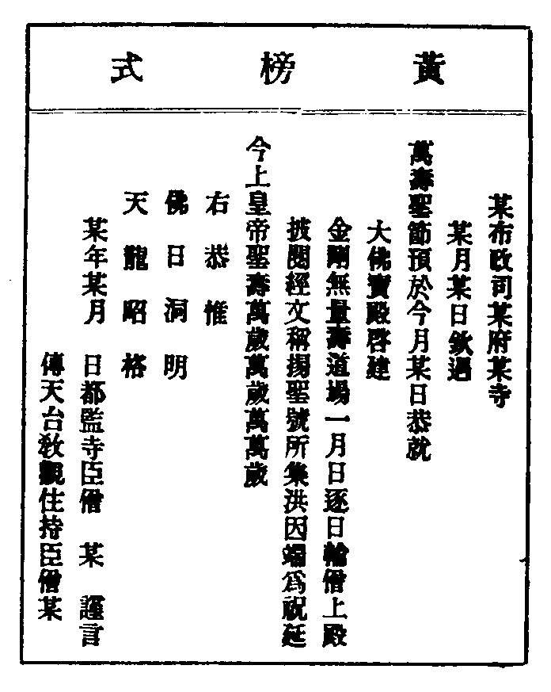
疏語
教建疏(首如前榜語書)
右伏以 均天之大蕩蕩乎無能名焉 與日竝明皜皜乎不可尚已戴 德罔知高遠叨 光莫喻照臨欲殫臣子之忠誠敢效華封之虔祝梵書五千卷演二十重華藏盡入提封妙旨六萬言會百億國小王咸歸至化少伸涓效上報 洪恩恭願後天不老行地無疆 壽舉玉巵 翠蹕永朝於長樂功成丹鼎黃河屢見於清流謹疏 某年某月 日疏。
滿散疏
右伏以 天生 聖人為天下生民之主 國有大命在國家有道之歸 唐虞雍熙文武兼濟踰萬年而得壽 覆壽無私預一月以為期虔蘄有在恭願天之覆地之載配德惟均 啇尚質周尚文推功復倍效 富壽多男之至祝衍蠻夷一統之 不圖謹疏 年月 日疏。
每日祝讚
大眾每日凌晨上殿侯立定先舉大悲呪一徧稱南無無量壽佛維那回向云(仰冀洪慈俯垂洞鑒上來諷誦秘章稱揚聖號所萃洪因端為祝延 今上皇帝聖壽萬安祝陪 天筭云云)。
景命四齋日祝讚
前一日晚堂司行者覆方丈兩班單寮挂牌次早殿鐘絕眾集舉無量壽呪(或舉大悲呪或舉消災呪)稱南無無量壽佛眾和三聲維那回向(仰冀洪慈俯垂洞鑒四齋吉旦謹集臣僧恭趨寶殿諷演秘章稱揚聖號所集洪因端為祝延 今上皇帝聖躬（大眾同稱）萬歲萬歲萬萬歲 祝陪 天筭無量壽佛仁王菩薩摩訶薩云云若朔望隨日審改正月則云孟春餘月例知)。
藏殿祝讚(初八日二十三日)
此二齋日侵晨登殿祝讚粥罷鳴僧堂前鐘藏殿鳴鐘鼓令直藏殿人轉藏眾集首座舉楞嚴呪繞藏行道呪畢立定舉南無釋迦牟尼佛南無無量壽佛南無佛頂首楞嚴南無護法諸天菩薩(眾各和三聲)維那回向(仰冀洪慈俯垂洞鑒四齋吉旦謹集僧眾恭趨藏殿運轉天宮法輪寶藏諷演秘章稱揚聖號所華洪因先為祝延 今上皇帝聖壽萬安次冀佛日增輝法輪常轉無量壽佛仁王菩薩云云或無輪藏有實藏處亦宜行之但除運轉之語)。
千秋節
至期之前一日晚堂司行者覆方丈兩班單寮并挂牌次早登殿舉棱嚴呪維那白佛回向(大圓滿覺應迹西乾身包太虗量周沙界仰冀洪慈俯某洞鑒某路某寺某月某日恭遇 皇太子千秋令節謹集僧眾恭趨寶殿諷演秘章稱揚聖號所萃洪因仰祝 皇太子睿筭千秋殿下恭順祇膺茂典位副青宮溫文光三善之名繼照協重离之慶十方三世一切云云)。
善月
正五九月為三長齋世稱善月每月建祈福道場先一日堂司行者覆住持兩班并挂善月牌於殿前具經單并置簿差僧每日鳴大鐘登殿看經祝讚至放鍾下殿終月列經目具疏滿散(提爾經云諸天帝釋太子使者閻羅鬼神俱用正五九月旦日案行王民等為善惡者四時交代歲終三覆以校與四王一月六奏使無枉錯覆校眾生罪福作善降祥不善降殃自隨開皇三年詔天下正五九月及六齋日不得殺生命唐武德二年詔天下正五九月十齋日不得行刑屠釣逮今 聖朝遵行尤篤各寺凡屆斯期毋或怠也○世人以此三月忌上任者避行刑故耳)。
祝讚門第一
祈禳門第二
佛以慈悲為化天以好生為德然而下民自孽致感失經背常之事吾徒當本
國朝度僧之意為民祈禱宜加精恪昭回佛天慈好之心庶幾禍消未萌菑變為福其如是復何安居逸食之媿乎。
祈禱
凡遇祈禱住持預集兩班茶議令庫司備辦供儀提調洒掃門徑廊廡嚴治壇場敷陳香燈花幡巡警大小寮舍齋潔復令頭首製疏意回向堂司行者挂牌報寮至日殿上營列供養住持專加虔謹僧眾各務整肅三日為期於齋粥二時鳴鐘集眾登殿諷誦祈禱初時首座舉南無過去正法明如來(云云)製語啟白舉大悲呪若干徧行道立定亟稱(觀世音菩薩及護法諸天菩薩)聖號和合十聲維那回向(仰冀佛慈俯垂昭鑒某路某寺住持比丘某蓋為知如后各列)復舉聖號和各十聲畢(十方三世一切諸佛一切云云)餘時舉唱迴向同前但免啟白三日後如未蒙感格則以本寺僧眾若干員分作幾引每引諷呪若干徧稱號懇切祈禱如是相繼輪流不斷從朝至暮以感應為期兼復別修功果必期至効方可滿散懺謝(如有灾異亟欲祈禱止如上規直通意旨啟白)。
接官
官員入山祈祝或先報至即令堂司行者覆住持兩班挂接官牌令人遠探候將及山門鳴鐘住持執提爐領眾門迎至殿拈香設拜知事當預問官御情旨轉達住持頭首知會慎不可忽舉呪稱號迴向(或住持或頭首不拘)畢請歸方丈或法堂設位獻茶祇待如儀或遊覧陪從話語勿談世事或法門山門急務當量便申稟不可造次有傷大體去時鳴鐘大眾門送(若迎送大官鳴樓鐘次則鳴僧堂前鐘)。
祈晴
(無垢清淨光慧日破諸暗能伏災風火普明照世間)。
霖雨不休萬物莫遂厥性陂塘欲決四民咸以為憂匪太陽照臨匿私實品彚業累感召特伸祈懇望賜昭彰由是謹於某月某日啟建祈晴道場每日集眾諷誦秘章稱揚聖號功德祈禱常住三寶大悲觀世音菩薩奉福護法列席諸天帝釋尊天四門天王日宮大陽天子(云云)平等祈求乞彰感應伏願掃蕩陰霾俾式乾于后土豁舒杲日庶廓淨於天倪地利豐饒天時順序。
祈雨
(悲體戒雷震慈意妙大雲澍甘露法雨滅除煩惱燄)。
水為物命豈勝爍石之威食是民天深切望霓之歎由下地同業所感非上天鑒物有偏欲遂濟通須憑祈扣由是謹於某月某日啟建祈雨道場每日集眾諷演秘章稱敭聖號功德祈禱(云云)奉福護教列席諸天五方行雨龍王六合雷公電姥風伯雨師雨部聖眾諸處溪源潭洞隱顯龍王嶽瀆山川靈壇社廟(云云)平等祈求乞彰感應伏願電掣雷匐起蛟龍於川澤雲行雨施蘇禾稼於田疇庶五穀之有秋俾四民之樂業。
祈雪
冬令如春慮致下民瘴癘臘前未雪曷期來歲豐穰敬攄一眾之精誠願覩六華之祥瑞仰惟洪造俯賜詳明由是集眾諷誦秘章稱揚聖號功德祈禱常住二寶大慈觀世音菩薩奉福護法諸天帝釋尊天(云云)平等祈求乞彰感應伏願千里飛花平地瑞占於盈尺九秋多稔生民欣賀於有年藏伏祲氛導宣和氣。
救日
累德重光環四洲皆仰臨照行天失度極八方咸起震驚雖憑曆紀之推祥恐罹陰沴之阨數欲復金輪還瞻舊觀須依紺相曲示周旋輙啟祈禱用徇救護由是集眾諷誦秘章稱揚聖號祈禱常住三寶觀世音菩薩日光菩薩奉福護法諸天三界萬靈滿空聖眾平等祈求乞彰感應伏願光回宇宙氣恊陰陽天下晏如豈用眩戈揮之伎太平有象孰須形盆覆之譏四方咸頌堯聲八表同光舜德。
救月
(大智精進佛世尊我今歸命稽首禮是羅候羅惱亂我類佛憐愍見救護)。
蟾蜍屆望一輪正滿於茲宵羅彗肆妖全璧適虧於今夕故星紀躔入月紀乃天心警誡人心欲萬方重仰清光當此際合陳大造由是集眾諷誦秘章稱揚聖號功德祈禱常住三寶大悲觀世音菩薩月光菩薩奉福護法諸天權實真宰三界萬靈滿空聖眾平等祈求乞彰感應伏願冰輪完復不靳玉斧之修白兔重甦還戢金罌之舊大地山河普照廣寒宮殿咸開萬象光昭九霄色正。
遣蝗
飛蝗入境驚看蔽天遮野而來異物為灾寧免戕稼害禾之慘遺捕故憑於官守蹂踐何補於耕農敢仗妙用之功式畀祆禳之福由是謹於某月某日集眾諷誦秘章稱念聖號功德祈禱(云云)奉福護法列席諸天三界二儀滿空真宰陰陽造化賞罰聖賢(云云)平等祈求乞彰感應伏願慈風猛扇遣繩繩緝緝於無何有之鄉願海周流蕩蠢蠢蜚蜚於常寂滅之理非但遣一物之災异抑將同六合以歡心。
謝晴
靈耀宣光千里霽華開望眼蒼生仰德八紘晴色動歡心自非大道垂鑑之明曷覩大陽啟關之照復陳涓善敢答洪恩(云云)伏願求而輙應已占豐歲之嘉祥感而遂彰更卜秋田之刈穫陰陽順序民物阜康。
謝雨
人或悖理兼旬驚旱魃之威天不遺民一雨慰桑林之澤憑茲優渥之潤頓濟發生之心既沐恩波敢忘隆德(云云)。
伏願八方稱賀人人懷擊壤之歌四海交歡處處期鼓腹之詠一味普益萬物增光。
祈禳門第二
報本門第三
法之為本至矣佛祖之道由是而生焉則凡有志於道者可不知其本哉一大藏教本眾生之性諸佛揭而示之諸祖對而揚之以文字廣第一義流行世間俾誦其書脩其道者皆有以復性之本陟佛祖之階也然生死幻有之質推本於生成尚知所以報況誕育世出世無上法身者乎誠能以出世妙道誘掖庶彚盡復本性報本孰加焉又復國朝剏業垂統
先帝皆是果位應御天下 大寶法王亦以大權輔化化事既終咸歸 證地 覃恩所被與教共隆而使吾徒究復本性得不追所自耶其於諱日拳拳懇懇思而敬之。
如來降生(四月八日)
將屆降生住持專誠命庫司預備供養令行者於佛殿設毗藍園香湯盆安太子像置二小杓於盆內至日敷陳供養併香湯畢堂司行者覆打起大眾各具威儀備香湯錢候鐘聲俱詣大殿依次立住持上香三拜不收坐具進前奉湯食行者遞上侍者捧置于几問訊畢復位三拜再上香下嚫點茶又三拜收具兩序出班維那揖香如前式大眾三拜收具住持跪爐維那宣疏白佛云(現大人相充滿太虗深遠雷音徧周法界巍巍乎高等須彌晃晃乎明逾日月云云)疏式見後維那宣疏畢首座舉唱浴佛偈云(我今灌沐諸如來淨智莊嚴功德聚五濁眾生令離垢同證如來淨法身) 行道浴佛畢立定舉安樂行復行道經畢復舉佛號各三聲畢大眾云(願滅三障諸煩惱願得智慧真明了普願罪障悉消除世世常行菩薩道十方三世云云)。
疏式
某路某寺住持末裔比丘(某) 與眾小比丘等。四月初八日恭遇
本師釋迦如來大和尚降生之辰謹備山殽野蔌茗盌鑪熏專伸供養諷誦 經文稱敭聖號所集 功德用酬 慈蔭者。
右伏以千聖嗣興莫不由實道而成正覺一法可讚所謂以慈心而遊世間既膺人壽百歲之時遂補賢劫四佛之處取萬二千國中央之地示三十二相劣應之身固敢為天下先而自稱人中勝豈羨繼天之貴蓋昭唯佛之尊應迹如存仰明星而猶朗化儀雖往想白虹而尚騰適逢賜影之辰少効惟馨之薦奉匜香水用沐金軀集茲有作之熏仰報難思之德 本師釋迦如來大和尚伏願彌隆至化闡宗風復振 皇風未喪斯文寢邪法流通 正法罄有相證諸相非相之實相統含生悟無生受生之真生等未來時如 出興日謹疏。
如來成道(臘月八日禮式同上但去浴佛偈耳)
非證而證久證於塵點劫前無成故成近成於菩提樹下蓋從本而垂迹為行已而化他降靈於覩史陀宮利見於迦維衛國視金輪而脫屣指雪山為故家分衛五人燕坐六載隨機時有賖促豈證道异過當雲散儀霄自爾水月交際春回嶰谷不妨花柳芬菲念化儀無得而稱惟內證尤不可示熟前番人雖云已矣愍末裔者其如之何歆艶遺音怵愓罔措伏願 俾末世優曇再瑞復覩明星使澆季甘蔗重榮還瞻 慧日。
如來涅槃(二月望日)
鐙夕後住持令堂司行者報示新學熟讀遺教經五日一次詣首座前背試至二月初一日為始每日齋了堂司行者覆打起集眾詣佛殿諷誦淨覺法師有禮文四明延慶至日皆如天台祖忌行之於法堂上置涅槃佛像左右敘列涅槃會上結集諸法藏結集諸菩薩僧結集緣覺僧結集聲聞僧四位牌銜配之近來諸方從簡就佛殿上食設拜而已豈盡報本之誠乎。
疏語
鷲嶽膺期顯一乘而極唱鶴林顧命指三德以真歸自高山先照示以出興至峻嶺餘輝云當入寂知唱生而唱滅恒常不變法性本然見令始而令終會必有離世相如是醫師背喪賈客他行花柳無私俄洊逢於遠日蘋蘩可薦罔敢墜於遺風式表芹誠仰祈藻鑑伏願
分身俯降護身使佩於靈符慧命長存贖命見頒於重寶庶令後裔克紹先宗。
國忌
上賓日屆期先一日晚庫司令堂司行者覆住持兩班挂諷經牌報眾就法座上安 御座用黃紙書 聖號牌位嚴設香華燈燭供養之儀至期鳴僧堂前鐘集眾住持上湯茶首座舉棱嚴呪呪畢舉釋迦楞嚴諸天號維那迴向云(天上天下聖主為尊世出世間法王自在仰冀洪慈俯埀昭鑑某路某寺住持傳教觀僧某今月某日恭遇 某聖聖忌之辰謹集僧眾諷誦秘章稱揚聖號所集殊[烈-列+(肙*力)]上資 聖駕供願逍遙八極仰翠輿玉輅之來儀自在中天享瑤關瓊臺之娛樂十方三世云云)。
天台大師忌(十一月二十四日)○(維那和會禮數與說戒同)
將屆忌辰住持專誠命庫司備供養之儀維那預先和會人借書畫器皿分項掌管復和會唱禮人員三夜習儀方丈初夜庫司次夜堂司後夜務盡孝思毋或饕餮也宿夜日參頭差行者於法堂敷陳玩具嚴飾祭筵爐瓶香几一一如儀上間設法衣拂子椸架椅等中間分列九祖山家諸祖山門始祖并嗣法師等位仍設祭筵下間設部文爐瓶椅等當晚堂司行者覆方丈兩班打起鳴僧堂前鐘集眾侯住持至各去帽頭首舉南無旋陀羅尼菩薩右旋行香一匝各歸蒲團位展具三拜默運香華散華畢依懺主禮文專誠修禮候奉請時住持起上湯茶(正日上湯食嚫茶侍者一一恭進)奉請後仍請山家諸祖山門始祖等及嗣法師請畢讚嘆宿夜正日維那讀疏(或知客讀疏式見後)前後堂首座繳疏宿夜唱誦前六段頂禮正日唱誦後六段頂禮仍頂禮列祖畢懺五悔訖設三拜頭首舉安樂行行道經畢舉佛號畢眾云(願滅三障諸煩惱云云)堂司行者唱云(知客請方丈和尚兩班大眾就此獻湯)湯畢(維那備湯果或請大眾或但請唱禮人隨山門例不同)次行堂參頭領眾詣筵諷經正日辰時常住點心堂司行者打起唱禮諷經與宿夜同至午時大眾起堂齋維那請唱禮提調等人就寮齋齋粥畢堂司行者就僧堂覆住持兩班鳴僧堂前鐘詣供筵諷經畢行者諷經(候禮時首座居中左右各三人互相同聲奉請有聲音者一人唱序)○(知客去帽燒香下湯維那湯果亦然)。
疏語
古塔開扉半座平分風月靈山在目三周俱付筌蹄摧我慢自高之幢示吾今親證之地陳隋應運蠻貊同文小根小莖毋望洋向若而嘆大枝大葉皆拔茆連茄而征眾丘繞司命遜其高寒諸子駕安車鞭其觳觫生民以來未有愈高泰山北斗之具瞻此舟過後更無益重浮木盲龜之難值玄珠休景智鑑沉光攪和酥酪之既成收卷波瀾而遐舉象武方絕塵於無何有鄭聲將亂雅於侏離淫允賴正音洗空邪說謬記刻舟之蹟輙營諱日之齋擷芳於沼沚之毛式資明信展敬於涓埃之效允答洪休。
法空寶覺智者大禪師伏願。
有伴即來招手勿忘於金地如月初上分身豈間於潢流再振玄猷庶昌厥後。
又疏
鈞天韶護合吾節乃張鳳凰麒麟適其時則出會斯文之將喪故亞聖之倔興恭惟
天台教主法空寶覺智者大禪師豁見靈山洗虞困之佛日大訇木鐸鼓震旦之金聲貫一乘極唱之音洞三際終窮之妙午照揭矣容魚目之奪珠大道廓如空鄭聲之亂雅簾月栢香而真法供養江陵金地而順物委蛇獲一旋陀羅尼姑示迹中之迹想三阿僧祇劫已極天中之天香風吹優曇鉢華鐵鼓透那羅延箭挹玉泉之源渺霈一雨於夢中仰華頂之峯高降眾魔於鏡裏至若帝王師法凡聖奉尊皆吾祖之緒餘奚下凡之足議(某)等忝值示歸雙樹逮至千年雲仍近百世之孫傳續愧一絲之眇魂搖鯨海空懷四帝之雄姿恩戴鰲山莫覩二嚴之奇相望江聲而動哭瞻斗氣以凝悲輙陳寒澗之蘋聊奉惟馨之薦嗚呼我祖罔極蒼天伏願 下印千江彌滿一天之月究竟六味吹噓九地之春矜氛埃轇轕之秋哀敗種離披之極藥垂瞑眩不舉步而悟故鄉跡免竛竮即此心而見真性誓報難明之化洞然無盡之燈。
諸祖忌
(章安尊者八月初七日忌 荊溪尊者二月初五忌 四明尊者正月初五日忌)。
山家諸祖忌辰宜皆修敬而於天台忌辰袷祀禮也章安結集荊溪記述四明中興此三祖之功大於名教故當表而出之屆期別祀亦禮也凡臨忌辰維那預令堂司行者覆方丈兩班挂牌報眾庫司辦供儀隔宿於法座上挂真(真缺設牌)至日敷陳供儀堂司行者覆方丈兩班鳴廊板僧堂前鐘集眾候住持至(不得覆蝐)鳴引二下首座舉南無某祖師菩薩領眾右旋燒香一匝立定住持上香三拜不收坐具進鑪前上湯上食侍者恭遞俟捧至几上退就位三拜仍進前燒香上嚫猷茶畢復位三拜收坐具住持上片香行者鳴行香鈸維那出班揖香兩序出班上香(式如前)大眾同展三拜住持跪爐維那宣疏(仰冀真慈俯垂洞鑒云云疏語如后)畢首座舉安樂行(如前式)若行宿禮亦如之但免出班上食而已。
章安尊者忌疏
得高忘筌能即言說而為解脫示月須指故因文字以顯總持慮衡台過後以無聞故荊揚住來而不憚殆可慶喜同功並德斯與智者默識心通恭惟
天台寶授結集法藏章安禪師總持尊者佩宿誓而復來稟今師而善繼捷五行於目視記萬言於耳聞由自任天下之難故超出門人之上菜食水齋氷牀雪被不辭著述之勞超雲邁印跨朗籠基豈圖講說之勝悲斯文之若墜示甘露之在茲東宮之法斾方還內院之寶臺已待(某)等叨生法末獲奉圓聞俄諱日之來臨痛深恩而罔報聊伸菲供少展涓誠伏願 再降攝靜白日羣雄不勞彈指重復回瀾青氈舊物竚聽欬聲庶大教振開皇之風俾末裔覩江陵之盛。
荊溪尊者忌疏
或蕩於空或膠於有捨哲匠誰其正諸既衷以理既闢以文[(厂@((既-旡)-日+口))*頁]圓宗巍然存矣符掖輪遊河之夢專尊王賤伯之功記諸部于台嶺毗壇數十萬言雲垂海立來多士於吳門楚甸幾千百眾鳳翥龍翔辭優詔以深藏挈宏綱而獨任天扶杞國日取虞淵台衡教觀於是重明靈嶽箕裘宜其遠紹(某)等濫同展卷實切銜恩適逢諱日於花朝聊陳薄供遙想靈龕於佛隴莫覩真容
天台記主荊溪大師圓通尊者伏願悲誓所薰即文字廣第一義遺編是賴期自他入不二門永俾邪徒咸歸正說。
四明尊者忌疏
聖祖往而玄化微懍若縣[糸*系]之引石邪說行而間世出明如杲日之旋空豈唯爝火之息哉宜載曇華之現耳恭惟中興教觀法智大師四明尊者幼生鄞水神僧遺佛子之靈初稟寶雲彌月講心經之要遂作學徒淵藪真成法海舟航鼓吹一乘網羅眾典行天台難行之行脇不至席四十餘年記毗陵未記之文手不停書幾千萬字青襟蟻集赤幟雲張中興教觀舍師其誰遠紹箕裘一人而已何鶴林之變色致梁木之纏悲空抱遺編難回寂定(某)等痛適臨於諱日實常感於深恩薄薦蘋蘩少酬埃滴伏類 不忘冥護永俾弘傳講貫連環同淳化天禧之歲行門啟鑰追乾符保恩之時重振斯文益昌厥後。
開山歷代祖忌
開山祖若法門重望功被山門宜如前諸祖設法堂上禮儀亦須製疏贊其功德若歷代忌屆期堂司行者預報庫司備供養請祖堂位牌就法堂中間鋪設粥罷集眾住持兩序一行排立住持上香湯食茶畢大展三拜首座舉阿彌陀經行道經終稱聖號(彌陀觀音勢至等)維那回向(因緣所生法我說即是空亦名為假名亦名中道義仰冀真慈俯垂昭鑑今月某日山門伏值前住當山第幾代某祖師齋忌之辰營備菲儀以伸供養謹集比丘眾諷誦真乘稱敡聖號功德奉為覺靈增崇品位伏願十乘齋策優游即入清涼池三觀彌修任運同歸秘密藏再回寂定重輝法燈云云)或徒弟法眷江湖道舊俵嚫請眾諷經維那回向(仰冀真慈俯垂照鑒徒弟比丘某等伏值前住當山先師和尚某法師齋忌之辰謹命同袍諷誦真乘稱揚聖號云云)○(若就祖堂下食一位諷經非禮也)。
嗣法師忌
嗣法師者傳道解惑授受之際得益非少當知根源凡遇忌辰禮宜盡誠須預計筭合用製供錢物歸常住置食設供或自就方丈營辦隔宿令堂司行者覆兩班報寮法堂上鋪陳祭筵玩具法座上挂真宿夜集眾諷經至日粥罷鳴堂鐘集眾對座鴈立住持上香上湯三拜又上食上嚫三拜上茶又三拜(大眾同三拜蓋在座下皆曰參學故尊住持也今諸方眾中或不拜者有之) 維那宣疏(或住持敘意親製或書狀侍者製)首座舉經領眾行道住持則侍立座左經畢舉佛號眾云(願滅三障云云)次行者諷經(宿夜同)齋時住持入堂燒香大展三拜(以答眾禮也)歸位侍者行嚫當晚就方丈備湯果請兩班江湖道舊(須令客頭行者預請)○(法眷俵嚫諷經如前)。
檀越忌
隔宿堂司行者覆方丈兩班掛牌庫司預專人詣檀越家請子孫到寺拈香量宜迎接復講供儀至日就祠堂敷設子孫至山已集眾住持上香首坐舉彌陀經稱號維那回向(真如界內絕生佛之假名平等性中無自他之形相仰冀神儀俯回昭鑒今月某日山門伏值故檀越某人稱呼遠忌之辰營備菲儀以伸供養仍集合山大眾諷誦真乘稱念覺號灼化財功德專為神魂莊嚴報地伏願心遊妙理質托淨邦香風起處聞經蓮華開時見佛)。
化紙誦往生呪三徧畢(十方三世云云)。
報本門第三
住持門第四
夫我能仁之制三月遷居八穢靡畜樹石田里皆許宣通四事供輸十方應慕雖有伽藍不居常產無有住持之云也教流震旦官以九司官舍謂有法度之處名之曰寺遂名僧舍以安其眾必擇齒德兩尊為眾範模者而統領之始有住持之稱焉至今
國朝慎選舉其德行可以服眾言論可以警世然後舉而任之苟其材德不稱雖耆耄不與焉故凡登其選者操大法之柄誕敷聖言啟迪後學昌法運於像季惠生民於塵剎乃所以裨 王化光世教也豈貪位苟祿所足尚哉其或行不備德不掩負且乘覆公餗者厥惟艱哉。
議舉住持
主席之位不宜久虗兩序勤舊先就庫司會茶議定具呈宗主三宗諸山知會約日本寺大眾江湖名勝公同保選履踐端正學識高明允合輿論廝次相應堪服眾望者准使院通例十名鬮三名然後填僉勘合申院凡諸山知事勤舊不可以鄉人法眷私情賄賂不擇臧否以玷教門近代以來樹黨徇私德不稱位寺院廢弛宗風不競蓋由此焉戒慎惟謹(公保既定兩班耆舊諸山繼時先僉草榆)。
請新住持(凡十件)
發專使
院堂鬮拈既定伺公帖下日都寺往首座寮斟酌專使次日庫司會兩班勤舊茶都寺燒香歸位白云卜選住持某日入院今請某某為專使白畢轉椅燒香獻湯至晚管待專使商議差能事行者老郎預通書次擇人製山門疏茶湯榜榜用絹素脩廣如法為專使者西序中或首座至維那或西堂或勤舊必須知事一人同去掌財議事具寫本寺所有產業什物須知迎接儀從一切必具起程之日專使詣諸寮相別鳴僧堂前鐘集眾相送三門釘挂帳設面裏設特位兩序勤舊光伴講茶湯禮如上首知事去則下首知事行禮如頭首勤舊去則上首知事行禮揖座燒香歸位相伴喫茶再起燒香對專使揖香歸位相伴喫湯專使起謝而去。
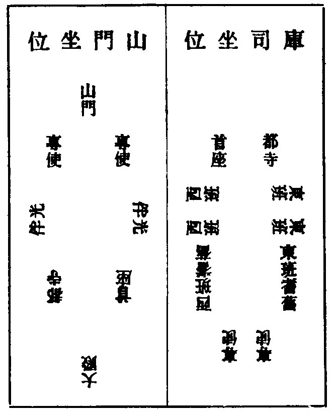
專使到彼山
專使至彼已先訪知客同到庫司相見畢送客位安置行李繼訪侍者通覆住持如蒙允請令敷設卓[袖-由+犬]安疏帖報兩序至住持出接專使問訊請趺坐住持中立專使插香初展云(某蒙山門使令攀屈尊嚴獲奉慈顏下情不勝威激之至)二展云(即日共惟新命堂頭和尚尊候動止多福)三大展三拜住持答一拜(某自揆疎謬難膺此請盛禮過厪不勝皇媟)專使捧呈疏帖住持受左右進卓置几上看過侍者揖專使坐兩班光伴首坐分手專使面住持坐侍者燒香獻茶同來行僕參拜畢兩班送專使歸安下畢住持即遠禮回方丈堂司行者鳴僧堂前鐘兩班同大眾詣方丈禮賀眾散知客領專使巡寮畢再詣方丈呈納本寺須知儀[泳-永+(從-彳)]什物當晚特為專使藥石至夜湯果皆請大耆舊兩序光伴庫司營辦。
專使特為新命煎點
專使先與新命議定齋嚫輕重兩序勤舊鄉人法眷辦事貼嚫齋料等費專使親送鈔納庫司置辦至日專使詣方丈插香拜請初展云(今辰午刻就雲堂特為煎點伏望慈悲降重下情不勝戰汗之至)再展云(即日如前)三觸禮住持曲身略答令方丈請客行者同專使行者稟請兩班大耆舊挂煎點牌報眾於僧堂內敷設主席位於知客板頭設專使位至齋時專使僧堂前候住持入堂問訊歸位揖坐歸中問訊揖眾坐聖僧前燒香次上下間次堂外燒香歸堂內住持前上下間次堂外問訊仍歸中間問訊退側少立候行食徧再燒香下住持嚫并兩序勤舊大眾嚫畢歸位伴齋俟折水出鳴鼓專使(再)起燒香行禮同前行茶徧如前問訊收住持盞專使行禮初展云(某聊備疏飯伏蒙慈悲降重下情不勝感激之至)再展(敘寒溫)三觸禮送住持出再歸堂燒香大展三拜巡堂一匝并外堂復歸內堂中間問訊收盞鳴鐘三下眾退專使繼上方丈致謝次詣庫司謝辦齋再詣方丈請住持至晚藥石至夜湯果皆請兩序勤舊光伴。
山門管待住持并專使
庫司會議管待先一日上首知事詣住持前插香拜請次詣客位稟請專使令庫司客頭請兩序勤舊光伴備幣嚫當如禮不可輕蔑詞語行禮並與特為禮同寢堂中敷住持高座設專使兩序等位如後式同來僕從遠接者管待外當別犒勞○(山門管待新命設中位專使面坐若住持特為專使則與首座分手不居中位)。
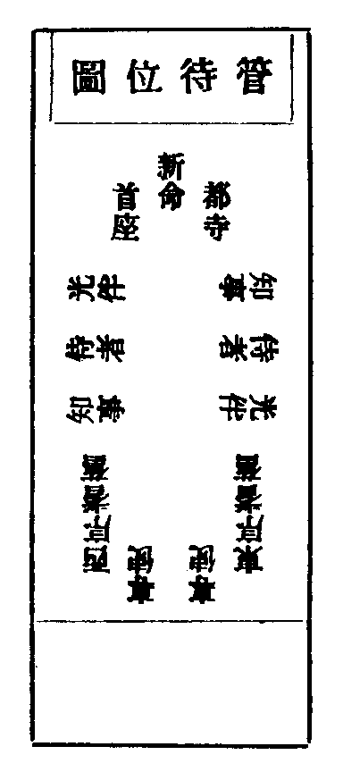
新命辭眾上堂茶湯
至起程日專使詣諸寮相別新命上堂致謝兩序勤舊大眾法語下座親往鳴鼓三下向法座立普與大眾問訊從西廊出鳴大鐘諸法器大眾門送行僕門外排立山門釘挂帳設中敷高座向內首座向外攝居主位西堂勤舊分手光伴東西序兩邊朝坐上首知事行禮揖坐揖香歸位點茶收盞再起燒香揖香歸位點湯湯罷起謝上轎兩序勤舊備轎遠送住持當力免之鳴大鐘住持轎遠方止凡住持多因遷赴他山僧行懷其宿憾輙致唇吻傳之官員士庶因一人無知而使一寺蒙其惡名老成耆宿外護隣封當戒戢之然為住持者凡事留遺愛可也。
西堂頭首受請
專使到寺先訪知客問訊略露請意知客先令人到所請人寮使備接專使少頃用拌袱盛書疏帖同知客詣所請人寮插香行禮(如請當代禮同)畢受請人就委知客同專使上方丈行禮稟云(今某寺請某人為住持)禮畢繼往諸寮庫司人事回寮所請人送專使安下處歇息至晚請湯果兩班光伴次日方丈報兩序并耆舊同往所請人寮作賀次第受賀訖巡寮人事當晚方丈請新命專使湯果藥石兩班相伴。
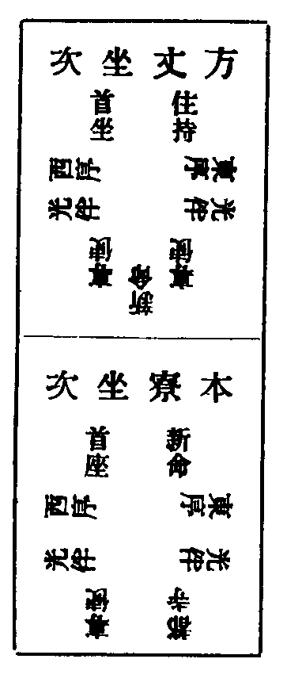
專使特為受請新命煎點
專使預送錢到庫司備辦煎點仍詣新命前議定方丈嚫并兩序勤舊江湖名勝鄉人法眷等貼嚫至日粥罷專使懷香詣方丈觸禮拜請(今晨午刻就雲堂聊備蔬飯特為新命和尚伏望慈悲特垂降重)復詣新命前拜請(同前禮)方丈客頭同專使行者請諸寮掛煎點牌於僧堂內住持對面設新命位外堂知客板頭設專使位位持預分付請客行者將至齋時先請新命到方丈少坐俟鳴板僧眾入堂專使詣方丈請住持(并)新命同赴堂專使隨入堂先揖住持歸位次揖新命歸位次歸中問訊揖眾坐進爐前燒香(右手執合左手上香)左轉身先到住持前問訊再燒香到新命前問訊(餘禮同前)下食行嚫茶畢先收住持盞專使至住持前初展云(某聊備蔬飯伏蒙和尚降重下情不勝感激之至)再展(云云)三觸禮住持略答專使送住持出外堂中間再回堂內又收新命盞專使至新命前二展(詞語如前)三觸禮新命略答送新命出專使再回堂內燒香大展三拜巡堂一匝并外堂歸中問訊謝大眾收盞鳴鐘三下出堂專使上方丈謝住持次謝新命次謝庫司辦齋復請住持并新命至晚藥石至夜湯果皆請兩班勤舊光伴(斯蓋古禮當力舉行近多泛簡俵嚫而已)。
付承嗣法衣
佛祖傳付心心相照師資授受啐啄同時靈山得記之儔皆傳如來教觀但緣興在迦葉故付別指一人金口祖承二十三傳而至師子而我二祖北齊悟大論三智一心中得遠承龍樹以授南岳天台初見南岳為說四安樂行以教研心妙悟三昧繼繼承承餘輝殘照以至于今故知所傳教與觀也衣之所傳蓋表信耳嗟乎流習之弊忘本逐末懵然不知承嗣者何事曰師曰弟子是亦可羞也夫 若新命嗣法於師先與師之心腹人吐露其意請求法衣受衣日恭詣師寢堂師乃當中趺坐略伸警策之語付衣新命即抽故衣披法衣對師大展九拜而退當日請新命齋下嚫是晚藥石並請法眷光伴。
山門管待受請人并專使
隔宿先令請客侍者詣新命寮請新命專使次日就寢堂對中面裡設新命位左右設專使位兩序勤舊光伴燒香下嚫等燒香侍者行禮如常式。
受請人辭眾
新命臨行之日粥罷同專使上方丈插香拜辭次詣庫司諸寮辭別庫司預令人山門首釘挂帳設敷位鳴大鐘集眾相送講茶湯禮上首知事燒香(行禮與當代同)若名德尊宿大西堂首座則住持必須陞座新命亦須隔宿令侍者同事使懷香詣方丈觸禮稟借法座次日粥罷於法座對面設新命位座左亦設住持位鳴鼓集眾住持陞座令侍者請新命坐(雖請亦不可據坐有妨大眾故也)讚美新命之德為法而出勸請舉揚慰眾渴仰法語下座(古人有引座之法即此謂也)住持歸座左向外而立專使同侍者至新命前問訊畢新命出住持前問訊次與兩序大眾問訊陞座舉揚敘謝結座下座詣住持前觸禮三拜次向法座立辭大眾普同觸禮三拜從西廊出眾送門首行茶湯禮如前。
新住持入院(凡一十件)
入院
若古法入院腰包頂笠至山門首下笠炷香有法語就僧堂前解包屏處濯足取衣披搭入僧堂炷香聖僧前大展三拜參隨人同拜掛搭已到佛殿拈香有法語大展三拜次土地堂祖堂炷香各有法語入方丈據室有法語次拜堂祝 聖此是古法也今則少有行之新命到來當看甚處安下近則眾往祇迎遠則兩序勤舊而已住持令專使預報免眾遠迎若安下處近當辦湯果兩序勤舊光伴依選定日辰入院庫司令執局人隔宿排辦掛接住持牌報眾至時鳴大鐘諸法器大眾門迎兩行排立行僕立大眾外新命到門燒香轉身立定舉法語直入大殿燒香舉法語大展三拜鳴僧堂前鐘大眾先歸鉢位立新命入堂聖僧前燒香大展三拜參隨人同拜維那至住持前問訊引巡堂一匝兩序送新命歸鉢位觸禮一拜(或新命曾於本山辦事不巡堂)次至土地堂祖堂燒香各有法語至方丈據室侍者進前炷香問訊側立伺舉法語畢行者進卓筆硯知事具狀(見後)備柈袱捧呈寺印新命看封付知事開封新命視篆訖就狀上先花押次題日子使印於上知事收狀衣鉢侍者收印退卓住持起立知事全班進列香椅前上首插香同兩展三禮初展云(茲者伏蒙和上光鎮法班山門不勝榮幸)再展云(即日時令謹時共惟新命堂頭大和尚尊候起居多福)三觸禮次頭首勤舊進前插香(香不受)諸山等[艸-屮]賀畢客頭行者喝云(請諸山堂頭和上兩班耆舊就座献湯)湯畢請官客諸山點心若前代住持別遷未赴或退居東堂未據室前講交代禮新命受[艸-屮]賀了鳴僧堂前鐘領眾躬送前代歸寮對觸禮一拜次兩班大眾作賀東堂歸寮次行僕皆當參拜。
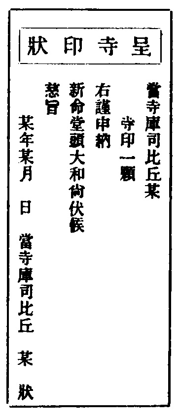
山門請新命齋
上首知事候據室後人事稍畢備袢袱爐燭具狀(式見後)懷香詣方丈請齋兩展三禮初展云(午刻就雲堂備蔬飯祇迎伏望慈悲特垂降重下情不勝戰汗之至)再展(敘寒溫)三觸禮住持略答知事呈狀方丈客頭收狀庫司客頭鋪設僧堂內住持位知事行禮與特為管待同。
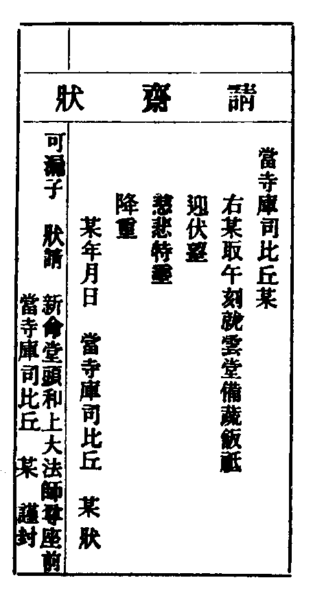
開堂祝壽
古之輦下列剎 朝廷差官馳命敦請或部使者或郡縣遣弊禮請就某寺或本寺官給錢料設齋開堂各官自有請疏及茶湯等榜見諸名公文集近來開堂各寺自備至時入院侍者分付行者鋪設法座覆諸寮掛上堂牌具寫官員諸山名目預呈住持於座左設位鋪卓衣袱爐燭排列疏帖預先和會維那宣公文首座宣山門疏以次頭首或諸山江湖名勝宣其餘疏知事預請上首諸山住持一員白椎座前對面排官員位侍者覆方丈鳴鼓眾集侍者同專使入請住持出鐃鈸旛華桃燈迎引至法堂主位鋪設處立如受請時未拈衣抽衣舉法語披法衣畢專使進前插香行禮初展云(伏蒙和尚光據法筵下情不勝威激之至)再展(敘寒溫)三觸禮拜住持答一拜專使呈公文住持受舉法語專使接與維那宣讀行者扛疏次山門諸山江湖疏一一遞上有法語分送宣讀若見任官請開堂有疏親自捧遞有法語宣畢住持轉身香椅裡對座問訊指座有法語登座拈香祝聖次拈 帝師省院臺憲郡縣文武官班香侍者逐一度香并燒從香惟承稟香住持懷中拈出親插爐中歛衣趺坐侍者下座對住持問訊兩序出班問訊(禮與旦望上堂同)諸山住持送入院者亦出問訊住持起立禮畢復坐侍者登座燒香問訊住持當令侍者請官員諸山坐諸山上首出白椎鳴椎一下云(法筵龍象眾當觀第一義)住持提綱畢先敘謝官員諸山江湖名勝道舊(云云此日開堂端為祝聖不敢多詞敘陳)專使知事頭首勤舊大眾略題過耳詳在晚參普說時敘陳結座畢白椎人復鳴椎一下云(諦觀法王法法王法如是)下座先受官員作賀畢知事接送客位管伴客頭行者即進爐燭一字排列座前專使插香兩展三禮畢堂司行者喝云(諸山人事)次喝云(西堂人事)展禮又喝云(知事人事)兩展三禮又喝云(首座大眾人事)諸勤舊齊插香同大眾兩展三禮次江湖名勝道舊法眷鄉人等展賀畢進罣愚椅子據坐侍者插香大展三拜小師師孫插香三拜次執局行者插香禮拜次參頭領眾行者插香禮拜次直廳轎番莊甲作頭老郎人僕參拜畢住持即往客位致謝官員諸山畢至齋罷次第巡寮諸齋同於一處門外設香几爐燭坐位各具威儀伺住持至於下首迎入請趺坐住持進香首者答香略敘寒溫致謝送出或長廊分作幾處設位各頭首寮亦於門內設位下首迎送古者行堂亦往燒香一炷當還禮眾行者兩行排立問訊迎送。
山門特為新住持茶湯
茶湯榜預張僧堂前上下間庫司仍具請狀(式見後)備拌袱爐燭詣方丈插香拜請免則觸禮稟云(齊退就雲堂點茶特為伏望慈悲降重)稟訖呈狀隨令客頭請兩序勤舊大眾光伴掛點(茶湯)牌報眾僧堂內鋪設住持位齋退(鳴板三下鼓鳴一通)集眾知事揖住持入堂歸位揖坐燒香一炷住持前揖香從聖僧後轉歸中問訊立伺下特為茶往住持前揖茶退身聖僧後右出炷香展三拜起引全班至住持前兩展三禮送出復歸堂燒香上下間問訊收盞退座湯與茶禮同。
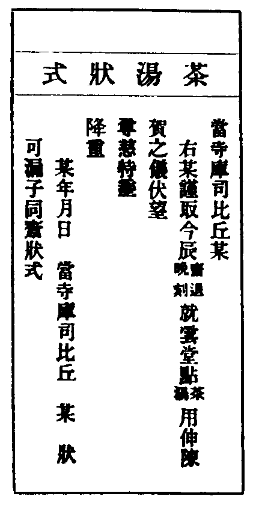
當晚普說
齋罷侍者覆住持云(今晚普說)令堂司行者掛普說牌報眾令方丈聽呌茶頭等於方丈廳設座罣愚小法被香爐花瓶燭臺彩袱侍者具寫專使兩序耆舊江湖名勝菴塔莊庫暫到入院侍者或有官客諸山留宿者逐一列名預用呈稟候昏鐘鳴堂司行者稟侍者覆住持次覆兩班鳴諸寮板三下鳴法鼓一通眾集兩班歸位立定住持出登座侍者兩班出問訊畢住持舉法語畢敘謝行者秉燭侍者呈目予先敘謝知事頭首東堂西堂專使勤舊大眾等庶得詳盡結座下座客頭行者喝云(方丈和尚請諸山和尚兩班單寮勤舊諸山就方丈献湯)知事送官客歸客位湯果住持伴諸山等湯果。
次日檀越祠堂諷經(并)歷代住持塔所炷香
庫司差人嚴設建寺捨田檀越祠堂備辦供養粥罷集眾住持至炷香上茶湯畢歸位首座舉經維那向向若前代住持塔所當一一自去炷香上食設拜並庫司辦祭具。
管待專使
知事預稟住持議專使并宣疏帖人嚫資輕重衣鉢閤備貼嚫須令合節至日寢堂釘掛鋪設位次請兩序勤舊光伴設專使特為位請客侍者躬請專使餘人則方丈客頭稟請禮與尋常特為同。
留請兩序
兩序俟管待專使畢約詣方丈咨稟告退住持未可遽從垂情委曲送出侍者令客頭行者備柈袱爐燭湯具住持帶侍者詣庫司諸寮勉留客頭先報退聀人出門外右邊迎住持入居主位分手坐侍者燒香行湯收盞住持盡禮勸留若職過滿亦須寬耐侯住持稍暇再稟辭退。
報謝參訪出入
入院之後須參見府縣官屬次謁檀越寄居官貴近今參見官貴以帕子為禮須常預備隨時宜也諸山須用門狀合報謝及相訪處知事逐一稟覆若住持遠出令行者傳語頭首知事知會庫司探伺歸期令堂司行者挂接和尚牌報眾候入山鳴大鐘集眾門迎住持先令傳語免之出轎問訊(勿勞大眾)即往佛殿土地堂燒香首座領眾至方丈住持接已問訊眾退客頭揖請兩班耆舊献湯略敘話而退方丈行者插香禮拜次參頭領眾行者禮拜畢住持須巡寮報禮若在城附郭朝暮出入無時不必講行或密回方丈兩序勤舊皆詣方丈問訊。
交割什物
入院後會兩序耆舊茶詳說山門事務所有 御書寶器砧基什物先呈住持次呈兩序耆舊眼同檢示逐一點對交割明白計筭財穀簿書見管若干具呈方丈仍備榜曉示諸莊須知諸方多於住持進退之際作弊苛取後患非輕不可不審。
兩班勤舊煎點住持
先一日首座知事勤舊為首各一人詣方丈插香拜請住持次請侍者小師至日寢堂中設特為住持位兩序勤舊位如常坐侍者小師問訊住持畢就兩序勤舊末位坐至時首座請住持出揖坐行禮若免即燒香進前問訊下嚫首座知事勤舊三人為首問訊歸位坐食畢首座起身燒香歸位喫茶若諸山道舊及辦事法眷小師等請寢堂煎點禮同但煎點人設位高下臨時斟酌。
住持常用(凡十件)
朔望上堂
前一日晚侍者稟住持云(來晨祝聖上堂)令堂司行者掛上堂牌覆兩班次早侍者再稟住持令客頭行者敷陳法座茶頭行者燒香點燭堂司行者鳴廓板各三下報眾坐堂至鳴鼓兩序領僧行至法座前問訊分班對立(眾中有不候領首至先自立定者非法也)住持登座拈香祝 壽畢趺坐兩班問訊侍者登座請法之後(冬月住持則云天寒各請覆頂)敘謝或先知事或先頭首隨山門例次西堂耆舊僧眾或外有諸山住持并大名字座右設位官客對座設位(識禮尊法則不坐也)敘謝則在兩班先即就法座下禮謝次者則後兩班敘謝即往方丈拜謝古來山家講貫連環寧拘朔望近既疎缺未免舉行端祝
聖壽當提唱宗乘開導後毗則舉揚要義若山門事務自就方丈茶議毋談世諦令眾倦聽若名德西堂前堂首座受他山請則住持引座舉揚登座不拈香及施主請陞座等皆不拘時(餘式如前祝讚門)。
法座圖
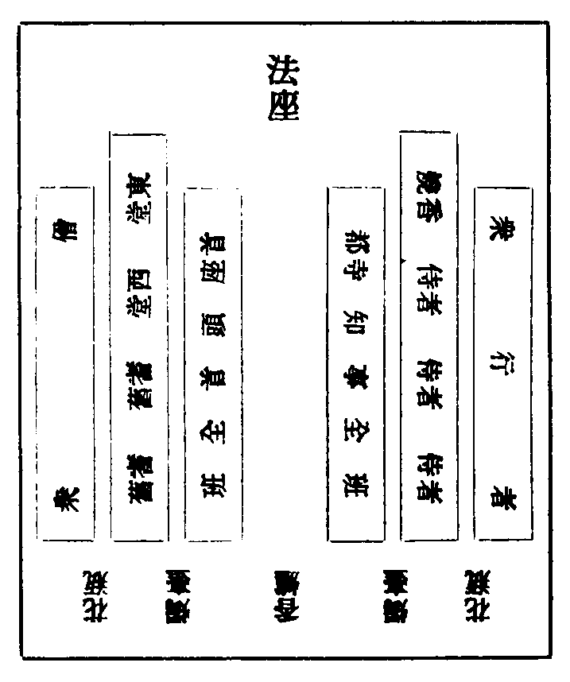
朔望僧堂(并)寢堂點茶
凡朔望粥鼓鳴時方丈茶頭備湯茶槃盞置僧堂臺上請客行者候行鉢水人出就座請兩序并請耆舊問訊云(方丈和尚請小刻就寢堂献茶)侍者候折鉢水人出歸中問訊聖僧前燒香往上下間并外堂上下間問訊歸中問訊邊立鳴鐘一下行盞鳴鐘一下行茶茶行將半侍者如前內外堂問訊歸中問訊退鳴鐘一下收盞鳴鐘三下下堂方丈即鳴小板一通眾至問訊板絕眾坐侍者燒香(東首面內立歸中問訊進爐前三步半小問訊双手開合臺留左臂上右手把底復安蓋上右手燒香把底安几上双手拈蓋合定少問訊左轉身三步半問訊茶至問訊揖茶退)。
會兩序耆舊茶湯位次(東序耆舊至監寺西序耆舊至維那)
凡方丈會茶湯首座分手如首座缺員下至知客分手知事不宜分手混雜西班位次頭首亦不雜東班位次或遇大諸山來則諸山分手首座次位若是山門節﨟或小諸山來亦只首座分手諸山面住持排位若蒙堂茶湯住持不起則蒙堂大耆舊居主位首座分手住持來赴亦首座分手則耆舊面住持設位如大殿法堂等處凡缺住持其位虗設兩班位次與常式同。
會西序茶湯
凡會西序首座分手其本山辦事諸方辦事隨職高下分坐職同次之(式見後)近來多因位次爭長以致叢林盛禮廢矣為住持者當公論之賓有禮主則擇之此之謂也若庫司會西序亦然住持不起都寺作主頭首寮首座作主首座不赴次頭首居主與本山第一位分手轉本山次位與江湖分手。
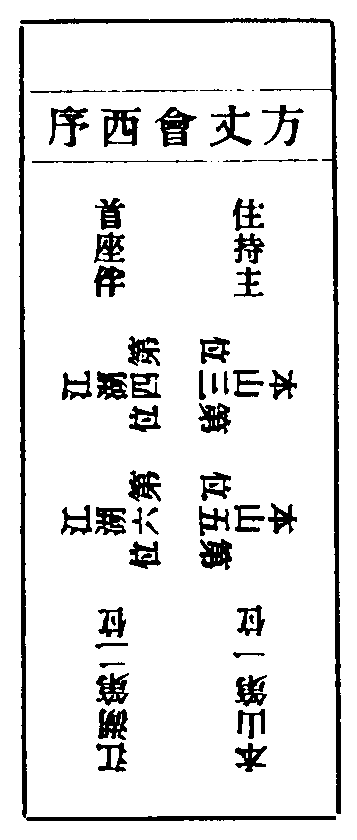
特為大諸山煎點
住持先一日令行者擎柈袱盛請書香爐燭臺香合侍者往燒香拜請或免拜次日依名書照牌用卓衣彩袱陳設於方丈廳前客至預認照牌侍者報住持接客客進問訊略敘寒溫畢侍者問訊請特為人歸位揖坐左轉身東南角立伺俱坐定侍者問訊至香爐前側身避特為位小問訊燒香(例如前)左轉身去特為人前問訊轉身東南角舊處立大問訊燒光伴香行者入卓次第下食候飯到時衣鉢侍者令行者擡嚫出侍者燒香問訊特為人(同前)行嚫食罷次第打茶鼓一通鼓絕侍者再燒香(例前)行者進茶侍者進特為前問訊揖茶又轉身舊處立問訊燒光伴香行者收盞打鼓三下出卓特為人進香案前拜謝。
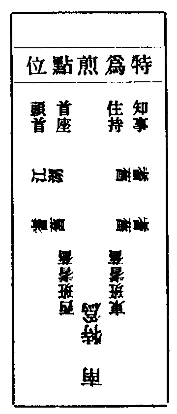
諸山到方丈煎點住持
凡諸山來煎點住持須先一日訪侍者略序來意同到方丈侍者通報伺住持出具香拜請不用書為重平交人却用請書受請已即令衣鉢侍者引訪庫司侍者傳方丈語委辦食是晚令方丈請客頭同帶來行者請兩班西堂大耆舊光伴侍者分付排設坐位至時催客客至煎點人揖入位立定煎點人方請住持出問訊請歸位揖坐出香案前問訊至香爐邊小問訊左手燒香左轉身至住持前問訊轉身香椅西問訊燒光伴香歸位候飯至時再燒香至住持前問訊立候擡嚫列住持前問訊歸位飯罷即起燒香至住持前問訊茶至再問訊揖茶再轉身香椅西燒光伴香歸位行者收盞退卓致謝如或煎點大眾光伴掛煎點牌至日僧堂嚴設住持位住持對面設煎點人位若嗣法人到寺煎點則設嗣法人位居知客板頭火板鳴大眾赴堂煎點人請住持隨住持入堂揖坐轉身聖僧前燒香至住持前問訊轉聖僧後出住持引手揖煎點人坐行食徧煎點人起燒香下嚫問訊住持及下眾嚫行飯飯畢收鉢退住持卓煎點人燒香至住持前問訊從聖僧後出爐前問訊鳴鐘行茶徧至住持前揖茶復從聖僧後出往住持前兩展三禮初展云(微禮潛尊特辱降重下情不勝威激之至)再展(云云)三觸禮送住持出煎點人復歸堂燒香上下間問訊謝光伴復歸中問訊鳴鐘收盞往方丈謝降重住持隨至客位致謝。
施主入山
施主到寺或先至知客寮或至庫司引上方丈献茶送安下處若官貴大施主當鳴鐘集眾接之同上方丈献茶若施主請陞座先請知事商議同詣方丈炷香拜請至日鋪設法座座前設施主位掛上堂牌鳴鼓眾集知客同施主上方丈請住持住持出登座趺坐施主座前設拜知客揖引入位聽法(但受禮就立坐則慢法也)下座拜謝若齋僧先與知事議定齋料用費維那實具僧行數目俵嚫多寡隨施主之心不可輒專僧堂內設施主位與住持分手齋畢知事陪施主僧堂少立待大眾出堂致謝次住持知事到客位謝若有寄錢齋僧住持須責付知事盡數辦供俵嚫不可互用刻落招因帶果(人天寶鑑云湖南雲蓋山智禪師夜坐方丈忽聞焦灼氣枷鎖聲即而視之有荷火枷者火猶起滅不停枷尾倚於門閫智驚問曰汝為誰苦至斯極耶荷枷者對曰前住當山守順也不合互將檀越供僧物造僧堂故受此苦智曰作何方便可免願曰望為估直僧堂填設僧供可免爾智以己貲如其言為償之一夕夢顒謝曰賴師獲免地獄苦生人天中三生後復得為僧今門閥燒痕猶存然顒公以供僧物作僧堂皆僧受用尚受互用之報若此今叢林撥無因果非惟互用甚至竊取常住為己有者宜何如哉)。
諸山相訪(尊宿 尊長 法眷 嗣法 平交 隣封)
凡尊宿到寺先須通門狀到方丈即令掛接尊宿牌鳴鐘集眾門迎彼若尚簡則潛入寺住持於寢堂具香燭相接鳴僧堂鐘令報兩班大眾插香問訊畢眾退兩班耆舊就陪坐燒香喫茶畢侍者插香禮拜帶來侍者行者人僕轎從參拜方丈執局及參頭領眾行者人僕轎番以次參拜侍者復燒香献湯罷送客位主居右送入插香客辭免略敘寒溫而出兩班參隨別送安下客頭令備轎住持同引巡寮報禮侍者隨侍(若以下諸山則侍者引巡寮)客頭預報諸寮巡畢住持同入方丈敘話如有鄉人道舊人事復歸安下相接請客侍者詣客位拜請云(方丈拜請和尚今晚就寢堂藥石伏望慈悲降重)寢堂釘掛帳幕設位(行禮如常式)藥石畢復請湯果皆請兩序光伴侍者覆來早上堂致謝次早請湯侍者燒香問訊揖湯行者問訊僕從聲嗟請粥粥罷請茶侍者再稟上堂半齋點心如大尊宿則首座眾頭首稟住持勸請為眾開示法要住持先到客位陳意若允首座具狀兩序大眾同詣客位插香拜請次請住持引座掛牌報眾法座前左右排位至時鳴鼓住持同下法堂位前立住持先引座(與常上堂同)下座兩班詣尊宿前問訊尊宿往住持前問訊歸中普問訊登座侍者兩序出班問訊住持問訊說法畢下座住持前問訊普與大眾問訊住持兩序大眾隨詣客位插香拜謝請客侍者具狀請特為管侍山門置食備嚫方丈備貼嚫兩班光伴行禮與常特為同若法眷尊長至先講諸山相見禮畢講居中座住持插香禮拜講法眷禮方丈內坐當讓中位親自燒香客力辭侍者行禮迎送如前若嗣法辦事法孫相訪當躬至方丈住持即令鳴僧堂鐘集眾人事先請住持中坐行弟子法眷禮次講諸山禮接送同前但特為管待請客侍者炷香稟請不具狀凡諸山相訪大小遠近不同若大諸山當迎接如前尊宿禮若次諸山平交者斟酌中禮可也若比近隣封從簡者徑造方丈免勞眾迎接禮如常式。
(請陞座請管待狀式)
(當寺首座比丘某 右某輒以來日拜 請舉揚宗旨開示 後學伏望 尊慈俯埀 開允謹狀 年 月 日具位狀 當寺住持比丘某 右某輒以今午就寢堂聊備蔬飯伏望尊慈特埀降重謹狀 年 月 日當寺住持比丘某狀)
(可漏子 狀請 某處堂頭和尚法師 具位 謹封)
退院
住持若年老有疾不任化導則雍容揖遜求賢以自代或心力疲倦或緣法不順自宜知退常住錢物須要簿書分明方丈什物點對交割具單目一樣兩本茶會兩序勤舊僉押用寺記印住持庫司各收一本為照公請一人看守方丈至退日上堂敘謝辭眾下座親往撾鼓三下而退若留本寺居東堂相繼住持者須當盡禮溫存。
住持門第四
兩序門第五
兩序之職皆為眾設紀綱叢林講行禮度流通教觀模範後昆于是繫者曰西序焉幹蠱寺門出納帑庾公心竭力纖芥分明于是務者曰東序焉作興法社於斯二者如身二臂豈可偏乎古人交互職之備歷繁重及歸師位世出世法任運應用無不適宜今岐分為二者以至於東西相視若傳舍之閱過客甚而相詆不相客者何哉蓋始度者不閑於教訓又任者不擇其賢否故然耳惟主斯柄者慎之慎之。
西序頭首(凡七職)
前堂首座
叢林表率人天模範專務說釋開發後昆領眾則中規合矩赴堂則瞻前顧後齋粥精粗勉諭執事僧行失禮依法訓懲三軌匠物常切在懷部味教觀如憑几杖垂恤老病津送死亡叢林之事皆悉舉行然雖尊宿碩德若住持以禮待之亦為人而出不以名位為較也如諸大士贊揚佛化猶文殊之助釋迦觀音之輔彌陀皆是古佛權現為眾上首如此論之豈輕任乎。
後堂首座
位居後板輔贊宗風講說軌儀晚生標格舉行禮樂不異前堂蓋為眾多故分兩職既領此任幸勿忽諸。
懺首
三昧懺法惟自山家任斯職者宜須解行全備若自既昏昏焉能使人昭昭務在表率行人朝夕策導敷陳啟白若對聖賢坐誦繞旋常存觀道能障所障皆泯能懺所懺俱忘終日加功終日無作先以無生理懺為主方用事儀事行既勤理觀彌進當慕慈雲以為標格或謂圓頓無如是行良可愍焉。
書記
山門榜疏書問祈禱詞語應係文翰皆掌之然住持專柄大法何暇文字而此職固不可缺董斯職者洞曉宗乘兼通外典亦非一日功也且禪宗何其多而斯宗何其少非謂無其人蓋與維那位次高下故退藏而不為也若禪宗書記位居首座之下用彼格此合居懺首之上蓋山家懺首此任非輕良以宗說俱通解行全美與首座等耳書記位不可加其右者蓋由此焉本宗維那曾歷燒香知客等職兼復點讀說文祈禱回向歷事繁重若五山十剎者職漏亦預保舉又烏得肯復讓之今立論云若請書記亦曾先歷侍者知客等職然後量材擢用助教海波瀾折衝外侮亦須兼講說文則位外維那之上職滿預保永為定式昔上竺佛光會中有此山在書記敕黃為之名出班書記豈維那不遜耶若越次直上問祈招之詩不知者不在此論也。
維那
綱維眾僧委曲調攝眾有爭競辨析和會堂僧掛搭驗度牒真偽或臘圖位排列審詳僧眾病亡調理津送給假參假觀時舉行迴向祈禱極宜至誠或有他緣或暫出入致委客司權令攝之點讀說文務開新學說或布薩珍重毗尼天台忌辰盡禮修敬厥職煩難莫越于此(寄歸傳云維那華梵兼舉也維是綱維華言也那是梵語刪去羯磨陀三字也僧史略云梵語羯磨陀那譯為事知亦云悅眾謂知其事悅其眾也又聲論翻為次第謂知僧事之次第也音義指歸云僧如綱假有德之人為綱繩也)。
知客
職典賓客凡諸方尊宿官負檀越方來名勝迎接交談禮宜典雅隨令行者通報方丈然後陪上相見量人重輕斟酌行事其旦過寮常備柴炭燈油溫存暫到法堂誦文湯茶照拂僧堂粥飯管顧客僧暫到死亡主其喪事堂僧圓寂同管收支維那在假攝行其事行遠在邇幸勿自夷方溪嘉聲迨今未墜。
侍者 燒香 書狀 請客 附 衣鉢
入室真子朝夕侍教期契心宗觀出處語默之間傳部味教觀之首慶喜之侍瞿曇章安之侍天台佛祖重寄其可忽諸○凡住持開講則點對部文預分科目若講唱製作咨稟所以記錄勿忘習讀問答鎖試取士當以至公輔贊法社節臘特為通覆相看挂搭燒香行禮等事燒香侍者之職也○凡住持往復書問啟札製作文字先具草呈如缺書記山門一應文翰代之書狀侍者之職也○凡住持應接賓客管待尊宿節臘特為具狀行禮請客侍者之職也或維那知客俱不赴眾或在假其行事三侍者皆當攝之若住持久出則歸眾行立暫出則不離班位。
衣鉢侍者之職不立班蓋能納忠救過羅致人才內外庶事通變圓融庶得上下雍容東西和順若非叢林老成不可任此毋使後生晚輩亂行敗德被悞非輕。
東序知事(凡四職)
都監寺
佛世設營事比丘幹辨眾事乃古之監院今之都寺也總寺門之庶務勤香火於朝夕祇接官員禮輅施主出納錢穀潔己公心簿書時時稽攷歲計種種有餘訓誨行童役使僕隸儻有過失量情擯罰毋恃威暴惹起事端莊庫職務舉用均平供眾修造常運勝心接物待人不可輕慢施舍己責振廢滯節器用齋粥二時心須赴堂行僕行益自然整肅巨細事務咨稟住持而行庶見行不失職眾無謗言夕惕若慄則善始終若苟圖其身以求厚焉欲免得乎任斯職者關係非輕住持必擇其廉能公謹臘高歷事為眾推服者預以禮聘之然後眾請職滿送歸單寮且古之單寮勤舊雖大剎數不滿十蓋求其賢能廉幹之艱耳果得其人或連年不易或數請再充為其無取於公乎若神照之佐四明石牕之輔宏智可為龜鑑。
(寶積經云佛告迦葉我聽二種比丘得營眾事一能持淨戒二畏於後世復有二種一識知業報二有諸慚愧及以悔心復有二種一阿羅漢二能修八背捨者如是二種我聽營事)。
監寺
山門事務都寺總之蓋以眾多復設監寺應有常住金穀錢帛米麥出入隨時上曆收管支用令庫子每日具收支若干僉定飛單呈方丈謂之日單或十日一次結算謂之旬單一月一結一年通結有無見管謂之日黃總簿外有米麫五味各簿皆須考筭凡常住財物雖毫末並是十方眾僧有分如非寺門外護官員檀越賓客迎送慶吊合行人事並不可假名支破侵漁其上下庫子須擇有心力能書筭守己廉謹者為之若有病僧合用供給之物即時應付如倉庫疎漏雀鼠侵耗米麥蒸潤一切物色頓放守護並須及時照管母得暴殄。
副寺
副寺之職蓋副貳監寺分勞也常住錢粮眼同出納務在公心母相私蔽供給所需常令備足缺乏預謀上首尅落常慎下流每日措辨柴薪至夜巡警火盜責任非輕宜加竭力。
典座
僧中淨食蓋緣資益色身身安則道隆道隆則本立故典斯職者常懷真心供養可也二時粥飯一切齋供當須精潔務在豐饒物料調和撿束局務至於粒米寸薪不許棄賤粥飯上桶先望僧堂焚香設拜次發過堂二時就厨下粥飯食不異眾訓誨行者習學經書行益普請毋得怠慢循守規矩均俵同利撫恤園丁栽種蔬菜及時耘灌不致荒蕪供給堂厨常令富贍傍公作善宜運是心。
列職(凡七職)
知殿
常淨几桉時滿燈油聖像頻常拂塵供養每日修設或遇風起須滅香鑪內火結起旛脚勿近琉璃凡遇節候四齋日開設殿門以便往來瞻禮其施主香錢油錢不得互用亦任施主隨心喜捨切勿苦覔令生猒心。
知藏
輪藏乃梁傅大士愍世人不誦經文及不識字故於雙林道場創轉輪藏以奉經卷其誓有曰有能信心推之一匝則與誦經其功正等今諸方倣之蓋重法也掌斯職者常加點對函帙銓次目錄於中缺者完之損者補之潤者焙之斷者粘之凡請經看誦者逐函點付看畢一一交收入藏庶免散失。
知浴
凡遇開浴齋前掛牌寒月五日一浴暑天每日淋汗鋪設浴室掛手巾出面盆整把鞋鋪脚布參頭差行者直浴齋罷浴頭覆維那首座方丈畢鳴鼓三下浴聖桶內皆著少湯燒香禮拜想請聖浴次第巡廊鳴板三下徧鳴鼓第一通僧眾浴第二通末頭首浴第三通行者浴三通末知事浴第四通人力浴監作行者居末浴就彈厭之住持例在三鼓入浴(小閤脫衣浴中用屏風遮隔行者若有故二鼓入浴不用屏遮亦不入閤只就領首板頭解衣)浴室外刊揭入浴資次浴室內掛白字小牌(鳴板一聲添湯二聲添水三聲則止)浴中誡勿喧閙浴罷照管火燭如施主設浴則課經回向蓋玅觸宣明成佛子住則事無虗設矣。
淨頭
掃地裝香換籌洗廁燒湯添水須是及時稍有狼籍隨即淨治手巾時常潔淨琉璃終夜長明淨桶把鞋檢點添換凡供此職皆是自發道心耳。
水頭
預積柴薪午夜燒湯供大眾沃盥須早排面盆點燈燭備牙藥常洗手巾乾淨冬月烘焙毋得湯冷失事令眾起念。
莊主
莊乃僧眾喉衿山門諸事所係根本近時叢林凋弊始自於莊皮之不存毛將安傳今略舉一二以為懲勸一謀莊職競起爭端莊少人多安能徧及搆怨住持上下不陸一也一充其職離寺相遠靡所不為致爭起訟供眾錢粮盡皆耗費復積重逋以累于後因而紀綱不振莊佃生侮租課不還二也縱使老成能事充之而州縣應酧吏胥管幹鄉都職役鄰里富豪皆合追陪既啟其端稍有不及便生釁隙雖不明支而巧立除破莊門之費倍於寺門三也請住持勤舊毋循私情恊心謀議委廉幹潔己者充之慎勿輕舉莊主至莊修理莊舍補治塍塘提督農務撫安甲佃些少事故隨時消弭事關大體申寺定奪毋事刻剝竭力運謀使火佃有追思之心常住有羨餘之益方稱厥任也。
監收
諸莊督歛眾僧命脉請非其人為害不少皆由住持耆舊私任匪人者有之因利曲徇者有之為耆舊執事人連年占充者有之托勢求充者有之樹黨分充者有之角力爭充者有之蠧分害私不可枚舉雖欲匡救末如之何儻得廉正勤舊輔佐住持公選區用加禮敦請至莊所日點對簿書分由甲佃禳保莊門加功課誦勿縱淫祀恣害物命選日開倉立限收米趂於天晴督責上倉看辨米色毋相私隱斗斛出納務在公平預留齋粮津發歸寺三限取足結帳明白克己為念奉眾為心毋苛取甲佃毋虧損常住則道福自然殊勝矣(請監收日會兩序耆舊茶請仍備管待至下莊日山門首講茶湯禮鳴鐘集眾門送)。
請名德都講
大方都講叢林宿德人天師範宗乘唱導法道係焉禮宜嚴重委曲控陳再三勸請如有允意住持請兩序歸方丈獻茶白云此間多眾宜得哲人講演說釋山中幸有某人學識高明教道所係煩兩序同詣彼寮拜請為山中都講白畢同至彼住持插香同觸禮一拜起詞云(大眾傾心久思示誨伏望慈悲特賜開允)答云(幸獲依棲貴圖藏拙既蒙見舉不敢有違)次日特為上堂舉揚盛德仍伸請辭下座同大眾座下爐前拜請畢即請同上方丈燒香獻茶兩班耆舊光伴茶罷堂司行者鳴僧堂鐘大眾同送歸寮住持對觸禮一拜送出次兩班大眾問訊畢即詣方丈致謝兩展(云云)三觸仍往庫司諸寮問訊方丈備草飯至晚藥石湯果別日管待並請兩班光伴此職若專講說則行道在頭首之後大眾之前若兼前堂位居班首進退不混兩序無交代也(如都講辭免住持上堂則就寢堂請與請兩班禮同)。
兩序進退
頭首乃叢林表率務擇才德相當者為之近競奢侈飲食財物為事使守貧抱道之士愈甘退藏法社何能振興知事乃山門重任務擇廉能相稱者充之古制大剎不過五人今行院額設亦有定例近多徇私雷請歸庫祇圖豐己未甞念公常住漸虗法門日弊原究其始咎歸誰乎若兩班職事滿日待昏鐘鳴同詣方丈插香觸禮一拜稟退知事就納庫記鑰匙其中或有再留者住持就便委曲和會不允其退次早親到彼寮侍者燒香點湯勉留若新請兩班不可率爾與其不得其人不若不求其備若果相稱未允所請須委心腹人展轉和會惟首座都寺必住持親往和會至請之時住持須具所請人目并舊兩班耆舊令客頭行者請粥罷會茶其舊知事於內僧堂前候行粥徧直日人出則入聖僧前問訊燒香三拜從聖僧厨後至椎邊鳴椎一下云(某等昨蒙方丈和尚令歸庫司充知事一年已滿心力勞倦告退歸寮謹白)再鳴椎一下往住持前觸禮一拜巡堂一匝中間問訊而退粥罷行者催請新舊兩班及耆舊(新兩班或請客侍者請)至寢堂住持接入坐侍者燒香茶畢住持躬起燒香眾起立伺住持歸位皆坐住持白云(前兩序告退此務不可缺人今講某人充頭首某人充知事逐一標名清訖)所請人進前遜辭住持與大眾歸左邊所請人歸右邊對觸禮一拜敘寒溫畢侍者揖新兩班歸特位朝裏列於兩邊坐定侍者燒特為香即至特位前問訊退歸中立待行者下湯侍者再到特位前揖湯鳴法鼓一通復歸中間問訊燒光伴香一炷湯畢鳴僧堂前鐘集眾送新兩班歸寮先住持送次舊兩班賀次大眾賀畢住持同大眾送舊兩班歸寮畢新兩班懷香詣方丈拜謝令堂司行者引報處寮住持請草飯湯果管待等如常式(維那僧知事退職亦僧堂行禮與知事同)。
侍者進退
請兩班畢舊侍者詣住持前咨稟云(某等久侍和尚今欲告退伏望慈悲)插香大展三拜而退住持令左右人和會新侍者定了後批下堂司維那先請首座并請為侍者人到維那寮問訊坐定燒香點茶畢再燒香朝首座叉手白云(奉方丈和尚慈旨請其上人充某侍者云云)逐一白訖首座轉身同維那主邊對侍者普觸禮一拜(不講湯禮)即同出門送首座畢維那引侍者上方丈住持出維那進前稟云(適奉慈旨令請某人充某侍者今引炷香禮拜)住持居中坐維那側邊坐新侍者插香大展三拜衣鉢侍者即出接入內室喫茶即令行者請知客上同維那與衣鉢侍者送新侍者歸寮其餘頭首等次第作賀知客光伴巡寮方丈直廳挑燈堂司行者報寮方丈聽呌請新舊侍者當晚藥石湯果並就方丈內室衣鉢侍者相伴赴謝必須到住持前問訊凡方丈請兩班頭首等則侍者必須別席或頭首寮或庫司或他山來就方丈煎點侍者同席無在。
頭首寮舍交割什物
寮舍什物常住置辨不易往往職事人視為傳舍及進退時僕輩搬捵蕩然一空使新人入寮舍者茫無所措庫司當置簿一冊具寫諸寮交割什物住持知事僉定仍分置小簿付諸寮兩相見對同凡頭首交替庫司令下庫同堂司行者對簿點數縱有損者必須無物公界脩補失者本寮陪償缺典之物庫司措辨增號上簿庶免走失頭首寮舍住持禮合照拂若視如常甚非尊賢任能之意為頭首者既辨己事亦宜相體此是履歷發軔之本耳。
方丈管待新舊兩班
先一日午後令請客頭請新舊兩班仍請耆舊光伴次日午刻催客住持出接坐定(坐次與請時特位同)侍者燒香先至新頭首特為前總問訊次至新知事特為前總問訊轉身燒光伴香入卓點湯下食畢至行飯時燒香下嚫飯畢燒香點茶鳴法鼓一通侍者如前到新兩班前問訊畢再燒光伴香茶罷鳴鼓三下退席兩班致謝住持送。
請兩班歸位
請兩班後至第三日參前住持令行者至新兩班處請云方丈和尚請來早就寢堂献湯歸位次早開長板時催請至方丈住持接坐侍者燒香献湯候鳴殿鐘住持同至大殿門首一人侍者問訊頭首請歸西班一人侍者問訊知事請歸東班舉呪行道回向畢赴堂侍者候兩班入僧堂門依上各揖請歸鉢位供頭送鉢。
兩序門第五
攝眾門第六
道非眾弗傳眾非處弗居故叢林之所由設也吾祖智者妙悟法華而以止觀之道化被六十餘州所至景從累數千百人曾不以眾為嫌也臨寂語門人曰吾以領徒太早損己益他蓋慮後人不脩內行外招名譽者所深誡也雖然獨學寡聞世教尚譏況出世妙道不求之師友疇能有聞乎哉邇見簦笈之士不憚勞遠一入於眾惟汲汲聲利之求鮮不為盲眾所導者矣苟能存意於古道則不患名不立也。
鬀髮儀(凡十科)
度僧乃續命傳燈佛法所係之大事必擇行堂屢試屢中可適器任者為之而 國朝屢降試經度僧 明詔非不嚴重初不為黨名固位而設也一有黨固之病而根于心而收凶厲累至于百而未足遺毒之慘使佛再世亦莫理也告切慎之○行者初受度牒以柈袱托呈本師及兩序各處插香體三拜復請首座策導維那引請并梵音師選日設供落髮作法之處律制令露地香水洒之周匝七尺四角懸幡今時不定或在法堂法座上須設像香華供養座下左右設二師位并几几上安香燭花瓶戒尺排大眾坐位并作梵師位若在大殿亦然但二師之位宜對佛若在僧堂住持分手設策導師位聖僧座右設梵師位與策導師相對得度人隔宿更衣沐浴就行堂點茶辭眾剃頭留四圍八髻并頂心周羅(梵語周羅此云小髺)復令堂司行者報寮掛牌至日粥罷鳴鐘集眾方丈請策導師歸寢堂分坐伺鐘絕起身同至作法處歸位坐定行茶於行堂用二卓以柈袱置袈裟度牒於上鳴鈸并引得度人出到土地堂祖堂佛殿各處炷香禮三拜畢就作法近處立伺待策導其間教誡引用因緣當隨機開示不必定一今且作一途示法具列十科(一白席 二請師 三謝恩 四策導 五禮佛 六落髮 七付衣 八歸依 九開發 十祝贊)。
一白席
眾集已維那起身鳴椎一下作梵師作優波利梵(具說戒章但改說戒二字為落髮)聲絕又鳴椎一下大眾說偈云(戒香定香云云)首座白席云粵惟西方大聖人之垂化也貫古今而不息周細大以無遺者其惟度人出家之制歟蓋剃髮披衣乃三世如來之儀範出塵離俗為十方檀信之福田黨能一日發心尚獲諸天勝報原夫能仁降迹當午夜以逾城方便垂慈越六年而成道雷音既震善來先度於五人法雨纔沾羯磨繁興於四海洞啟菩提之路廣開解脫之門暨後漢明皇感日光之通夢摩騰大士施神化以應機雖萬乘以皈依曾魔外之未服故經文聖像憑烈燄以儼存致正信大心弃冠簪而求度一時如司空劉峻等二百六十人京師士庶三百九十人王宮妃子一百九十人道士呂惠通等六百二十人並發心出家釋種從茲競秀曇華自此聯芳由漢永平迄今越一千三百餘年無論男女窮達皆得出家紹隆釋種人到于今咸遵明訓今有本寺行者某人正因出家歸心聖教克勤道業人稱善焉今奉
帝恩許容披剃將從和尚乞求落髮若準律文必須單白羯磨和僧使大眾知和合者善或復房房語令知委然此行童發心精進眾所知聞羯磨之詞不繁宣秉直令教授座主引入道場與其披剃謹白。
(若準律文因諸比丘輒度人故為俗譏訶由是佛制凡伽藍中剃髮者必須單白和僧意令合界通知內無專輒外絕譏訶故當稟律科儀先作羯磨可也)○和尚秉法闍黎答法。
問(僧集否)答(僧已集)問(和合否)答(和合)問(不來諸比丘說欲及清淨)答(此無說欲及清淨者)問(僧今和合何所作為)答(剃髮和僧單白羯磨)和尚云(大眾合掌聽作白大德僧聽彼 某甲欲求某甲比丘剃髮若僧時到僧忍聽與某甲剃髮白如是)問(作法成否)答(成)和尚云(作法既成請教授座主引入道場)。
二請師(引請師引行者至佛前禮三寶三拜引至和尚前禮三拜胡跪合掌引請者云)
夫儒敦事父唯重於成身釋制依師務存於學道故使四儀軌範籍此以琢磨五分法身因茲而成立理宜竭誠事奉故當克志陳詞恐汝未能我今教汝若言某甲處當稱自己名其餘言詞皆隨我道(唱云)。
大德一心念我某甲今請大德為剃髮和尚願大德為我作剃髮和尚我依大德故得剃髮出家慈愍故(三說)和尚答云汝既殷勤三請我當為汝作剃髮和尚(行者就禮一拜起引請師引至策導師前禮三拜胡跪合掌引請師教申三請白云)。
夫猒處凡流欣參寶位將欲剪除於俗態理宜警策於蒙心矧在當仁必由名匠今為汝請某人為落髮阿闍梨而況此師誨人無倦接物有方故須專秉一心恭陳三請恐汝未能我今教汝若言某甲處當稱自己名其餘言詞皆隨我道(唱云)。
大德一心念我某甲今請大德為落髮阿闍梨願大德為我作落髮阿闍梨我依大德故得剃髮出家慈愍故(三稱)策導師答云汝既恭陳三請我當為汝作落髮阿闍梨所有教示當須諦聽。
三謝恩(策導師允請即就座為說云)
善男子須知出家之士高超物表為世福田君不得而臣父不得而子應受人天恭敬供養是故剃髮著袈裟已即參預三寶聖賢之數雖君父且無設禮之儀況餘人乎以是則知非細事也然而父母生汝養育恩深國王許容度汝其功亦大汝今應往明顯處拜謝國王及父母深恩厚德然後却入道場為汝落髮(行者就禮一拜起引請師則引出明顯處燒香先拜國王再燒香拜父母)說辭親偈(引請師教行者逐句隨念)唱云流轉三界中恩愛不能捨棄恩入無為真實報恩者。
四策導(謝恩畢乃脫俗服出清信士度人經去中著偏衫入策導師前胡跪聽受法訓)
蓋聞束髮簪纓世俗顯成人之美毀形壞服釋門彰入道之基所謂選佛於僧心空及第者也善男子汝今既慕為僧合究為僧之志且如何是為僧之志須知道為一切眾生開佛知見是為僧之志為一切眾生示佛知見是為僧之志為一切眾生悟佛知見是為僧之志為一切眾生入佛知見是為僧之志若也果能如是為僧果能如是用心之時便可變大地作黃金攪長河為酥酪供養於汝未為分外若坐玩歲月虗消檀施外若四儀之肅肅內實眾善之荒荒以之望道如南轅而適燕以之諭理如蒸沙而作糜吾末如之何也己慎誡之哉慎誡之哉不可自欺也(策導畢師執淨瓶以香湯灌頂)說偈讚云善哉大丈夫能了世無常捨俗趣泥洹希有難思議(此偈策導師唱或引請者唱行者隨聲應和)。
五禮佛(策導師復云)
善男子既灌頂已得去王之子更須先往佛前禮十方諸佛(行者就禮一拜起至佛前禮三拜)說皈敬偈云歸依大世尊能度三有苦亦願諸眾生普入無為樂(引請者唱行者逐句隨和)。
六落髮(禮佛竟引請者引至策導師所近前胡跪以淨巾圍肩師說云)
善男子汝無始來莫不增長憍慢貪海納流致使流轉生死不能休息我今為汝剃除鬚髮為除憍慢著壞色衣為除貪愛少選之間即與三乘賢聖儀相無別可謂慶幸夫剃除鬚髮乃表三界九地煩惱四圍之髮表下八地思惑我與剃除頂上周羅乃表非非想處第九一地煩惱此惑[宋-木+取]後難斷當往和尚處求為剃除汝當志誠莫生愛著(鳴引)眾念出家唄云毀形守志節割愛無所親出家弘聖道誓度一切人(出度人經)。
七圓頂授衣(策導與剃四圍髮竟留頂上周羅至和尚前胡跪合掌)
和尚問云(今為汝去頂髮可不)答(爾)和尚云善男子剃其髮所以去貪欲而斷虗妄壞其衣是乃捨飾好而安淡泊如昔阿闍梨與汝剃四圍髮者表破下八地思惑今則與汝去頂上周羅表破非非想處上一地煩惱此惑難斷才斷此之煩惱方曰出家蓋出三界家也則可起萬劫之沉淪成佛道之軌則可貴可尊慎勿輕易(和尚為灌湯剃頂上小髻眾人再念出家唄如前云云 準知落髮本是和尚恐其煩久故請闍梨為除餘髮者但留少許和尚親 今時先自剃作小髻非本教意剃落已竟和尚授與袈裟便頂戴受受已還與和尚如是三反和尚與著之出善見論)說偈云。
大哉解脫服無相福田衣披奉持戒行廣度諸眾生善男子汝剃除周羅已竟我今當授汝衣然此衣者準律制說即五條是也梵語安陀會華言作務衣須知此亦大僧所受用物若沙彌應依法著縵衣無相條者類時制方袍服也今既初出家當受三歸戒借著無在也坐具亦云隨坐衣梵云尼師壇為護身護衣護僧臥具故置左臂袈裟之下凡著袈裟不得向佛塔上座三師亦莫背不得口銜及兩手奮當如法受持名良福田不可慢易。
八歸依(策導師前胡跪合掌聽說)
善男子汝今外儀已具必須內解更明內外相應方為盡善若準毗尼母論云剃髮著袈裟已然後授三歸五戒十戒等然此五戒十戒於登壇時當自授受庶免破戒成障也且今為汝翻邪歸正授三歸依蓋翻無始邪心歸乎三寶正覺從今已後盡此形命誓依佛師誓學法藏誓同僧海汝當志誠隨聲稱唱(引請者導唱)我某甲盡形壽歸依佛(法僧例佛三說)我某甲盡形壽歸依佛竟盡形壽歸依法竟盡形壽歸依僧竟惟願三寶哀憐攝受(沙彌禮佛行遶三匝阿闍梨一說或三說)。
九開發教誠(授三歸依已告云)
善男子汝今已遂出家已除鬚髮已著袈裟已是與諸佛列聖同其儀表古德云出家乃大丈夫事非將相之所能為以其可以弘荷三世佛乘可濟九流諸有是誠非細務也自今而往慎勿怠墮唐喪光陰如吾佛世尊臨滅度時遺教有云汝等晝則勤心修習善法毋令失時初夜後夜亦勿有廢中夜誦經以自消息無以睡眠因緣令一生空過無所得也是則依佛法僧修出家行起精進心遠離諸惡當須諮白本師置辦三衣一鉢用擬受戒此衣鉢者乃是三世諸佛正儀賢聖沙門標致九十五種外道尚不知其名字唯佛出世示此未曾有法若不自辨或臨時假借當準律明判定不得戒由無戒故一生虗受信施將來當隨惡道長劫輪回無由解脫此非小事切宜用心必須擇從明師受具足戒然後篤學大乘闡揚教觀期登品位繼續祖燈實吾之至望也勗哉學子毋怠毋忽汝今當往佛前禮敬三寶陳自慶偈(沙彌至佛前三其胡跪)偈云(引請者唱沙彌隨說)善哉值佛者何人誰不喜福願與時會我今獲法利。
十祝讚(或和尚或闍梨或引請或表白皆可應執手爐上香維那鳴推一下迴向云)
上來剃僧舉揚佛事所集功勳奉祝 上界天龍八部梵釋四王此土神祇伽藍真宰各展威神安僧護法
今上皇帝聖壽萬安文武官班常居祿位師僧父母善惡知議十方檀信法界眾生承此善根俱登彼岸念清淨法身毗盧遮那佛(十號云云畢)作唄(處世界如虗空云云)滿散(沙彌至本師前禮三拜禮策導師三拜禮大眾三拜畢出門外下手立眾出問訊畢詣本師前插香大展九拜詣各寮禮謝每日早晚二時至本師前問訊咨稟參堂禮如后式)。
受戒護戒
夫戒是正順解脫之本三學之要門眾善之初章尸羅不清淨佛法不現前三世諸佛歷代祖師未嘗不因戒而入道若不受戒非大僧數是故應須受戒受戒之後復須護持五戒十戒二百五十戒大乘十重四十八輕戒毋得有犯犯戒之罪如鏡對像果報昭然思之察之。
辦道具(凡一十七物)
將入叢林先辨道具中阿含經云所蓄物可資身者即是增長善法之具菩薩戒經資生順道之具。
三衣(三衣者大衣七條五條也味者呼七條偏衫裙為三衣非也)
一僧伽梨(義翻雜碎衣以條數多故亦名眾集時衣入王宮聚落乞食說法時著又大衣分為三品每品有三○下品九條十一條十三條兩長一短○中品十五條十七條十九條三長一短○上品二十一條二十三條二十五條四長一短)二鬱多羅僧(此云上著衣即七條也兩長一短名中價衣從用云入眾時衣禮誦齋講時著)三安陀會(此云中宿衣謂近身住也五條一長一短名下衣從用云院內行道雜作衣)○(衣名福田者僧祇律云佛住帝釋石窟前見稻田畦畔分明語阿難言過去諸佛衣相如是從今依此作水衣增輝記云田畦貯水生長嘉苗以養形命法衣之田潤以四利之水增以三善之苗以養法身慧命也田衣之相如圖)。
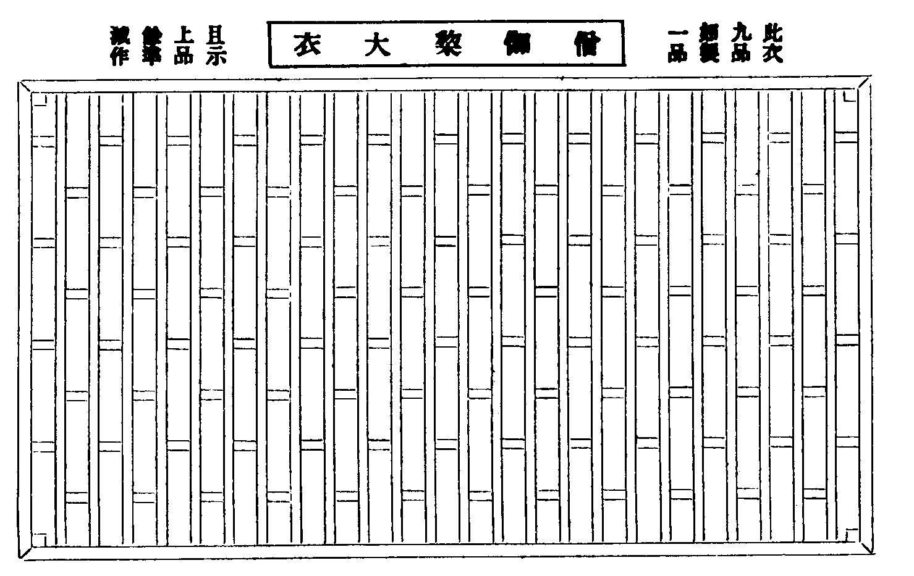
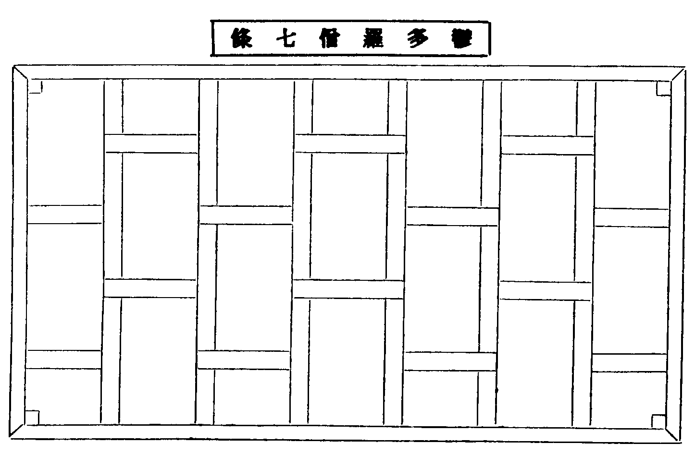
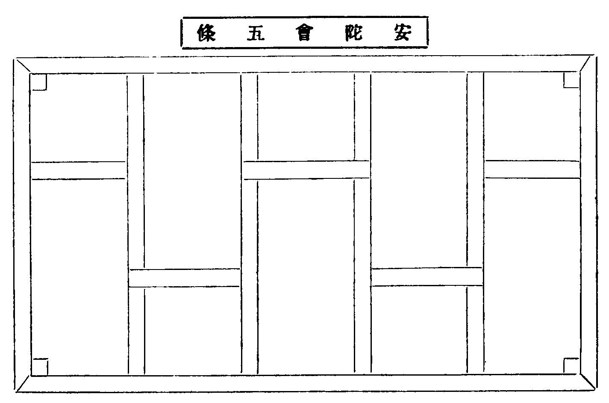
袈裟此云不正色染從色得名會正云準此是草名可染衣故將彼草目此衣號亦名壞色即戒木中云三種壞色一一色中隨意壞若青若黑若木蘭僧祇謂青銅青也黑謂緇泥涅者木蘭謂樹皮可染作赤黑色然此三色名濫體別須離俗中五方正色及五間色○凡製三衣當用布不許絹細者豈可用殺生之財而為慈悲之服智論云如來著麤布僧伽梨然其衣體須求厚密離諸華綺律云若細薄生疎蕉葛生紵並不可用綾羅錦綺紗穀細綃並非法物今多不信佛語貪服此等諸衣○然此三衣皆須加法加五條法云大德一心念我比丘某甲安陀會五條衣愛一長一短割截衣持三說餘二衣法例爾可知。
坐具
梵語尼師壇此云隨坐衣亦云坐具如此方橙褥之類僧祇云律應量作長佛二搩手(準五分佛一搩手周尺二尺則今長四尺也)廣一磔手半(即三尺也)製法色同袈裟。
鉢
梵語鉢多羅此云應器章服儀云堪受供者用之名應器(今略云鉢又呼云鉢盂即華梵兼名也)善見云三乘聖人皆執瓦鉢乞食資生四海為家故名比丘(僧祇云鉢是出家人器非俗人所宜十誦云鉢是恒沙諸佛標誌不得惡用)佛制聽用瓦鉢鐵鉢(律云大要有二泥及鐵也)出曜經云如來成道已經七日三賈客獻食佛不欲受當觀過去諸佛為用何食諸天空中過去諸佛皆用鉢食天王即奉鉢非巧匠所造自然成就復念四天四鉢取一捨三則非其宜盡取按為一鉢(又如佛本行集經)十誦律云鉢半鉢大鍵[金*咨]小鍵欽(鍵音虔[金*咨]音咨經音疏云鉢中之小鉢助鉢用故)四分律云鍵[金*咨]入小鉢小鉢入次鉢次鉢入大鉢(此律言小鉢即十誦大鍵[金*咨]也次鉢即半鉢也)鉢支(律云鉢不正聽作鉢支)。
偏衫
律制只有僧祇支(此云覆膊衣亦云掩腋衣)此長覆左膊及掩右掖以襯袈裟又制覆肩(華言覆肩梵語未詳)掩於右膊但西土人多祖膊恐生譏過故須掩之然此二衣亦同袈裟畟方但無條葉耳此方往古並服祗支至魏時宮人見僧祖一肘不以為善始加右袖兩邊縫合謂之偏衫截領開裾猶存本相故知偏衫左肩即本祇支右邊即覆肩也(今接領開脊者蓋是魏遺制也)。
裙
梵語泥伐散那唐言裙諸律舊譯或云涅槃僧或云泥洹僧或譯為內衣或云圌衣(圌音舡即貯米圓器似圌而無蓋乃取其圓義云也)。
直裰
濾水囊
增輝記云為器雖小其功甚大為護生命即慈悲之意其在此也南山鈔有式樣(文多不錄)若作漉水袋如杓形漉訖還著水中(鈔云今有不肖之夫見執漉囊者言學律唯在於漉袋然不知所為處深損生妨道者猶不畜漉袋縱畜而不用雖用而不瀉虫雖瀉而損蟲命且存殺生一戒尚不遵奉餘之威儀見命常沒其中)根本百一羯磨云水羅有五種一方羅(用絹三尺或二尺隨時大小作絹須細密不透虫者僧祗云虫太細三重作又用密練絹作若用疎絹薄紗紵布者本無護生之意)二法瓶(陰陽瓶也)三君遲(以絹繫口以繩懸沉於水待滿引出)四酌水羅五衣角羅(言衣角者非袈裟角也以密絹方一探手或繫瓶口或安鉢盂中濾水用也 又四分律不得無漉袋行半由旬 無者袈裟角漉 衣角有二說不同)然此五種是私用若置於眾處當準寄歸傳式樣用絹五尺兩頭立柱釘鉤著帶繫上中以橫杖撑開下以盆盛等(慈覺大師頤公集經律凡三十一偈又多不錄未謂世云濾羅難安多眾宗頤崇寧元年於洪濟院厨前井邊安大水檻上近檻唇別安小檻穿角傍出下安濾羅傾水之時全無迸溢亦五大眾沾足浴院後袈故此僧行東司亦皆濾水出家之本道也後住長蘆說井濾水二十餘處常住若不濾水罪皈主執之人普冀勉而行之)。
錫杖
梵云隙弃羅此云錫杖由振時作錫聲故十誦云聲杖三千威儀經云持錫不得入眾日中後不得復持(日中即知時)不得檐於肩上(錫杖經云佛告比丘汝等應受持錫杖所以者何過去未來現在諸佛皆執故又名智杖又名德杖彰顯智行功德本故聖人之表幟賢士之明記道法之幢迦葉白佛何名錫杖佛言錫名輕也倚依是杖除煩惱出三界故錫明也得智明故錫醒也醒悟苦空三界結使故錫疏也謂持名與五欲疎斷故若二股六環是迦葉佛製若四股十二環是釋迦佛製定字五百問云持錫杖有多事能警惡虫毒獸故)。
主杖
十誦律云佛聽蓄杖其[矛*(替-曰+貝)]用鐵為堅牢故斯蓋行李之善助也毗奈耶云佛聽柱杖有二因緣一為老瘦無力二為病苦嬰身故(凡策杖若見尊宿并二師須投杖於地問訊或是二師杖必倚著處問訊若為二師操杖師有顧問必把杖以對之)。
如意
梵云阿泥盧豆此云如意狀如雲葉如此方篆書心字為人天師說法稱心而執此者外表儀相故曰如意昔隋煬帝請天台大師講經大師縱無礙之說肆縣河之辯稱悅帝心特賜犀角如意耳若釋氏要覽誠師所載云如意今講僧執之多是私記節文祝辭於柄備於忽忘要時手執目對如人之意故名如意據他所說只如文殊執之亦備忽忘邪今說法者多執拂子若私記節文不知又書於何處那庸鄙之談真齊東野人之語也。
拂子
律云比丘患草蟲佛聽作拂子僧祇云佛聽作線拂列氎拂芒拂樹皮拂若[牛*苗]牛尾馬尾并金銀裝柄者皆不得執。
淨瓶
梵語桾稚迦舊略云軍持此云瓶常貯水隨身以用淨手(寄歸傳云凡水分淨觸瓶有二枚淨者用瓦瓷觸者任用銅鐵出觸以觸水洗入淨以淨水洗)。
香爐奩
香爐奩盛香器也或云爐并奩乃二事也(菩薩戒經或本云香爐無奩字)。
刀子
楞伽經云為截袈裟故聽蓄四寸刀頭如月刃今相承呼為護戒刀僧史略云戒刀皆是道具為割衣故刀名戒者蓋佛不許斫截一切草木壞鬼神村故草木尚戒況其他也。
數珠
牟棃慢陀羅呪經云梵語鉢塞莫梁云數珠繫念修業之道具也木槵子經云昔有國王名波流棃白佛言我國邊小頻年冠疫穀貴民困我常不妄法藏深廣不得遍行惟願垂示法要佛言大王若欲滅煩惱當貫木槵子一百八箇常自隨身志心稱南無佛陀南無達磨南無僧伽名乃過一字如是漸次乃至千萬能滿二十萬遍身心不亂除諂曲捨命得生炎摩天若滿百萬遍當除百八結業獲常樂果王言我當奉行(百八結者即見思惑見惑開為八十八使頌云四諦欲界三十二色無色各二十八三界共成八十八俱舍廣明如是義思惑合為十頌云欲界思有四謂貪嗔痴慢上二各除嗔共成十思惟已上見思共成九十八使更加十纏頌云纏八無漸愧燒慳并悔眠及掉舉昏沉或十加忿覆通前合為百八結)。
遊方參請
新學欲出遊方須擇有法可學處求掛塔準律云比丘有法有食處應住有法無食處亦應住無法有食處不應住初到且過具威儀推熟於叢林能事者一人為參頭同到客司白云(暫到相看)知客出接客云(即日共惟判賓法師尊候多福久聞道譽獲奉瞻際下情不勝感激之至)答云(山門多幸荷蒙遠臨)揖坐燒香献茶略詢來歷客起謝茶歸且過(或送客司圍爐等處安歇)知客即回禮客接入問訊知客云(即刻共惟諸位尊長法師尊候納福適承降重特此拜謝下情不勝感激之至)答(禮合相看何勸降重)參頭自送知客出門若欲禮拜住持則先詣侍司相看行禮如前起身稟云(某等特來禮拜和尚敢煩侍者通覆)侍者揖再坐詢問來歷若在粥罷侍者即去(欵坐少時客某通覆)繼覆住持如允當時詣寢堂相看若在齋後侍者云(請回安下處客某通覆)則覆住持如允次日早鍾鳴侍者令客頭報相看(如未暇侍者詣安下處報禮善言安慰)粥罷參頭領眾詣寢堂侍者入稟住持出參頭進前云(請和尚趺坐)住持免即插香展具又免即觸禮一拜問訊詞云(即日共惟堂頭大和尚尊候起居多福某等久聞道風茲者獲奉慈顏下情不勝喜躍之至)畢參頭同眾側位就坐侍者燒香獻茶住持有問當實答不得多語起身爐前謝云(重承降接特此拜謝)住持送出參頭止云(和尚尊重)隨至侍司謝云(適來有勞神用特此拜謝)歸安下處侍者回禮參頭接入同眾問訊云(移刻共惟高侍法師道體起居多福禮合詣寮拜看返辱降重下情不勝威激之至)侍者云(山門多幸特荷遠臨報謝稽遲下情不勝多愧)若古禮住持恭往且過回禮重遠來也今則無聞但名勝相看就送客位回禮學子相看就法堂下間迎伺住持回禮免煩降重而五山大剎則不回禮半齋方丈請點心當晚藥石(又當晚特為湯次日粥罷請茶之禮在住持行)。
求住
若求掛搭再詣侍司問訊少坐起身稟云(某等慕仰和尚道風特來依栖座下拜煩高侍通覆)侍者顉話具寫求住人諱呈覆方丈如允侍者次第求住持榜頭下堂司維那令行者請求住人茶接入燒香獻茶畢參頭起稟云(某等適奉方丈慈旨令依附左右伏望甄錄)答云(山門多幸同守寂寥)參頭同眾各取度牒遞與維那上戒臘簿隨即付還送出歸下處各書方丈兩序寮舍門狀各人各寮一紙不得共名亦不可白帋標頭具名(狀如後式)復各備大香一片(近有率香錢省是杜初心入道之路非佛祖流通之心凡百有位當力免之)次早維那令堂司行者伺探方丈有暇即報求住人引到方丈通報排立寢堂候住持出問訊參頭進云(請和尚趺坐)各人進前插香初展云(某等仰慕和尚道風特來依栖極荷收錄下情不勝感激之至)二展云(即日共惟堂頭大和尚尊候動止多福)大展三拜住持略答一拜求住人收具問訊而退次引至庫司諸頭首寮通門狀人事問訊略插香不受問訊講禮次各寮各齋人事(堂司行者報云新歸堂人事今止傳語多不相接皆非禮也若舊識鄉曲次日一一重訪)即歸下處伺頭首還禮(或不回禮者非也)。
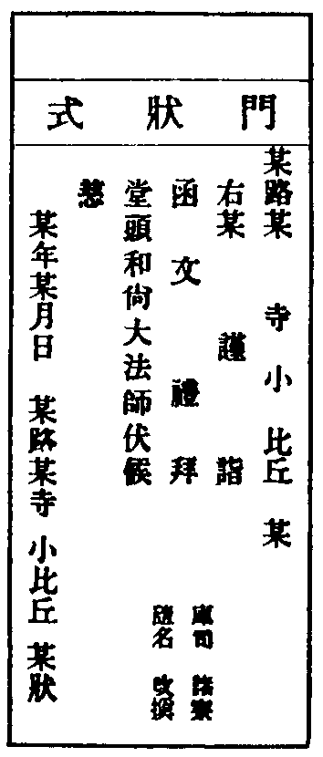
參堂
次早待木魚響時參頭領同歸堂眾右手入堂至聖僧前排立問訊參頭進前小問訊袖出香合右手拈香二炷轉身歸位同眾大展三拜參頭領眾到住持前排立問訊從首座板頭巡堂一匝自上堂至下堂次至外堂上下間問訊再回聖僧前問訊退就外堂隨眾喫粥下堂眾出同供頭入內堂認位掛鉢。
大名勝作住
大方西堂名德首座欲作住計語次露意住持當尊賢重德當修治單寮躬自點示卓几床鋪什物完備別日會兩序勤舊茶住持躬起燒香復位立白云(某處西堂首座不棄來此同守寂寥煩兩序勤舊同送歸某齋脫著)受送人進前云(宿生慶幸荷蒙收錄)同送至齋門住持先送入受送人揖住持歸主位問訊(云云)送住持出受送人轉居主位揖兩班入次勤舊入問訊送出即懷香詣方丈拜謝知客引詣庫司頭首寮勤舊處回禮別日方丈特為管待朔望請茶並同勤舊之列(此據望重者之禮餘則量宣)。
江湖名勝求住
如欲求掛塔或次日赴茶罷就稟或別日粥罷特詣方丈稟云(某等仰慕和尚道風持來依棲伏望收錄)住持如允則發榜頭煩首座請送則首座令堂司行者請受送人并知事一人維那侍者同至寮首座則燒香獻茶白云(住持發批為某處某人遠來同守寂寥煩兩序同送歸齋)送入齋時首座居主代住持問訊畢受送人歸主位首座轉居客位領知事維那同問訊畢懷香詣方丈拜謝次至首座庫司頭首勤舊處問訊若小剎歷聀者不在送例又當取其人材臨時審量耳。
遷齋
方來兄弟既掛塔歸堂行禮已辦不宜久寓下處必遷齋舍脫著看讀寫遷齋狀詣堂司詳稟維那(云云)即撿齋舍簿或未遷齋或某齋人少相議酌量寫齋名標貼於狀上再稟維那備申即詣侍司侍者同上方丈呈狀住持題判發下堂司堂司行者關請錀起開齋門對簿交點什物卓凳牀具等頂若後請假亦須稟維那同堂司行者對簿交割什物完備方許給假近失點對使每年措辦有揖常住。
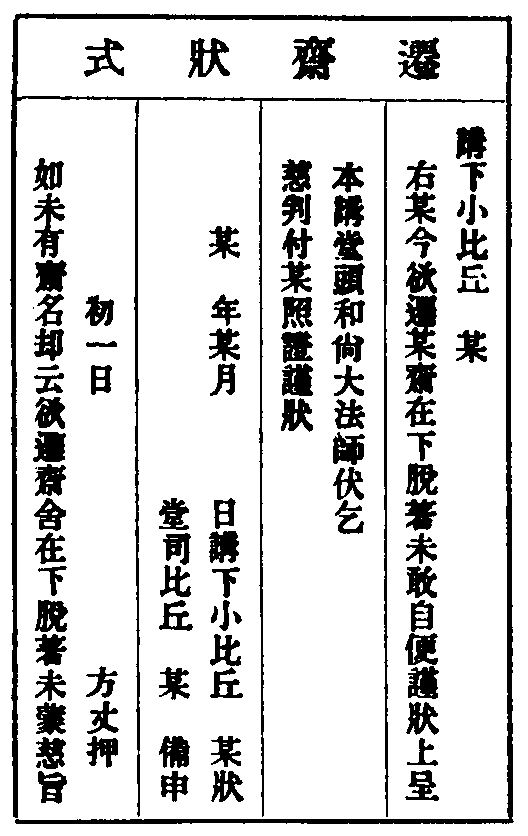
謝掛塔
凡求住已定即謝掛塔如住持以禮繁待後來求住者一同謝掛塔如夏前歸堂者在四月八日謝如祖忌齋歸堂者在十一月二十日謝其戒臘在上者為參頭參頭當具小圖習儀三人一引每引一人為小參頭詳記詞語仍令堂司行者率各人香錢五伯文煩侍者到方丈回香約有幾引回香幾片就稟擬定何日謝掛塔至日侍者就寢堂設香几爐燭參頭領眾依圖列立參頭同侍者入請住持出歸位立參頭同眾齋問訊畢參頭進前稟云(請和尚趺坐)退右足側轉身於香几右邊空處出行過復位齋問訊畢參頭同本引三人問訊參頭進爐前小問訊懷中取香雙手插香右邊空處過復位三人同門訊展具住持展手約免之參頭進云(某等宿生慶幸獲遂依棲下情不勝喜躍之至)退歸位問訊再展具住持復約免收具再進前云(即日時令謹時恭惟堂頭和尚尊候起居多福)退歸位門訊觸禮三拜住持略答第一引問訊過左邊接班尾三三趲上(插香詞禮並同)禮畢普問訊而退次日方丈請點心。
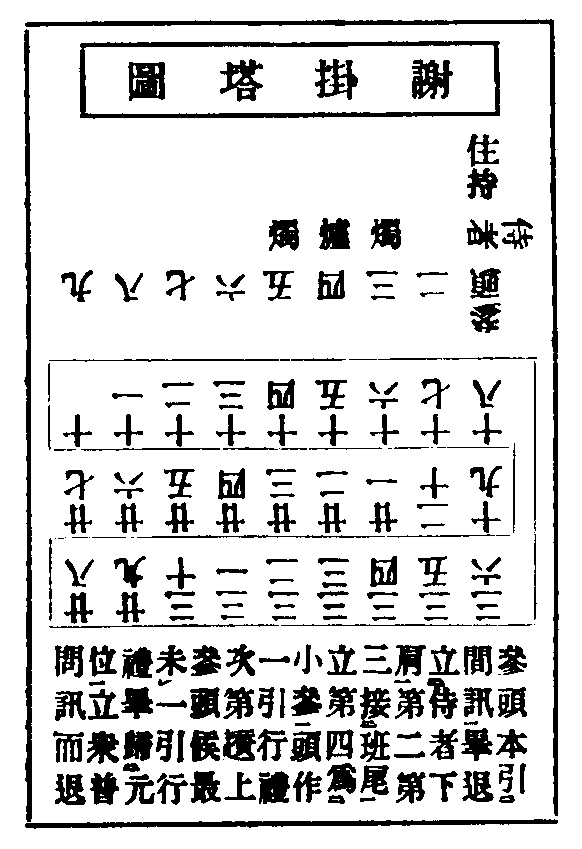
請益
凡欲請益住持須先詣侍司詳稟侍者咨覆住持如未允煩再三陳請如允次早粥罷各備大香一片詣方丈煩侍者通報行者裝香點燭請益人鴈立於爐前伺住持居中位坐問訊俱詣前插香退身大展九拜收具進前問訊云(某等稟惟惟鈍入道無門伏望慈悲不倦提誨)退身下首肅恭側立諦聽法誨(如新學者兼誨以入眾規矩)如問來歷從實稟答進前問訊而退次詣侍司拜謝或請益西堂都講首座則凂同門中一人預稟如允所請禮亦同前師當規以日課授文令其熟讀(粥罷塔衣齋罷至夜亦頭持衣俱詣法堂朗誦)毋使泛觀強記日富月貧當惜寸陰右則焚膏繼晷若久歷教庠專明於解未諳立行師當懸取止觀等文妙旨示之令其頓修佛乘依解立行若不觀心如貧數寶荊溪尊者云觀心乃是教行樞機當觀一念識心德量無邊體性常住諸佛眾生互攝無外如帝網之一珠影徧眾珠眾珠之影咸趣一珠現前一念亦復如是初心學者即以上品寂光而為觀體目足相資則涼池可到矣。
攝眾門第六
增修教苑清規卷上